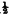

CHAPTER XV.
MISCELLANEOUS.
ON APPARATUS, AND ITS USES AND ABUSES—HOUDIN’S DIE—ADDITIONAL EFFECT—NEW METHOD—THE GOLD-FISH TRICK: PISCICULTURE EXTRAORDINARY—THE BOWLS AND COVERS —THE CLOTH—WHERE TO CARRY THE BOWLS—HOW TO PRODUCE THEM—BAD AND GOOD INNOVATIONS—HOW TO CAUSE THE BOWLS TO DISAPPEAR—MISHAPS—GOLD FISH AND INK—THE GLOBE—THE LINING—THE LADLE—HOW TO FILL IT—THE CARD—THE TRICK IN A SMALL WAY—TRAVELS OF A GLASS OF WATER—GOLD! GOLD! EVERYWHERE—THE HEN FOR EVERY HOUSEHOLD—THE BEST BREEDS: NO. 1, NO. 2, AND NO. 3—HOW TO HATCH YOUR EGGS WITH DESPATCH—DECAPITATION NOT FATAL TO FOWLS—“ KLING, KLANG ”—HOW TO STAND FIRE—THE INTERCEPTED BULLET—THE WANDERING GINGER-BEER BOTTLE—THE PLUME AND THE SEED—COOKING MADE EASY: HAT VERSUS SAUCEPAN—A LITTLE ACCIDENT, AND HOW TO RECTIFY IT—THE FLAGS OF OLD ENGLAND—A NUT FOR BLACKSMITHS TO CRACK—THE DRAWER BOX—HOW TO MAKE IT—WHEN TO USE IT, AND WHEN NOT —THE CONE—BACCHUS’ DOVECOTE—HOW TO PREPARE THE BOTTLE—HOW TO MESMERISE AND CAUSE A DOVE TO DISAPPEAR—THE WINE-DRINKING CRYSTAL BALL—BACCHUS’ MAYPOLE—ON PROGRAMMES AND TITLES—HOW TO MAKE THE BOTTLE—THE ACCOMMODATING BOTTLE—HOW TO “WORK” IT SUCCESSFULLY—ANOTHER METHOD—THE MESMERIC SUSPENSION WAND: TWO METHODS—THE MAGI’S BRAZEN ROD—THE BALLS—HOW TO CHANGE THE RINGS —THE SHOWER OF PLUMES—THE FAIRY FLOWER—THE VASE.
HOWEVER great the respect which one may have for sleight of hand pure and simple, it is quite undeniable that a set performance is greatly improved by the occasional introduction of some neat-looking, but not gaudy, apparatus. Under this head need by no means be included self-acting machinery, during the performance of which the performer acts as a mere puppet. All the apparatus mentioned in this work will require adroit handling; and the conjuror will do well to practise as thoroughly with each article as he would towards the acquisition of a feat of sleight of hand. Apparatus seems to have a malicious pleasure in going wrong, always on the most critical occasions, and, for this reason, the majority of skilful performers feel most happy when using very little of it. One thing may be taken for granted, viz., that apparatus, exhibited without the assistance of sleight of hand, and plenty of it, causes the performer to degenerate into a mere showman—opening a box here, and taking off a lid there. In introducing apparatus, the performer must lay a very great deal of stress upon the sleight of hand portion of the business, as though therein lay the whole of the trick, the apparatus being a mere necessary evil in connection with it. By engaging the attention of the company with sleight of hand, it is drawn away from the apparatus, the spectators being so convinced of the performer’s skill that they do not so readily accuse him of trusting to gaudy boxes and canisters for his effects.
Some of the apparatus described can be made at home, but, as a general rule, it is cheaper and more satisfactory to buy it at a conjuring repository. Low prices are the order of the day; and, as the articles are made by experienced men, they must be superior to those manufactured by persons new to the business.
Houdin’s Die Trick.—Although this trick, sold everywhere for a shilling, must be as well known as any, I have found it appreciated by certain audiences, which have, by the way, invariably been drawing-room ones. Before a boys’ school, or large public audience, it would not be advisable to exhibit it. The trick consists in placing a die upon the uppermost of two hats, covering it with a cover, and causing it to pass through into the lower hat. The secret lies in a hollow false die, which has five sides only, and which fits over the real die like a cover. The actual cover used in the trick fits over the dummy die. The method of performance is extremely easy. Place the dummy die in the breast pocket, in a handy position, and give the real one to be examined with the cover. Whilst this is being done, borrow two hats, and take them to the centre table, slipping the false die from the pocket into one of them when your back is turned. Place the hat containing the dummy on the table, crown downwards, and invert the other one over it. Now take the die and place it upon the uppermost hat, and explain to the audience as follows: “Ladies and gentlemen,—You have all kindly examined the die and cover, and found that both are genuine and free from trickery. I now take this solid die and place it upon this hat; but before doing so I will show you that the hat has no hole through the crown. [Take up hat, and hold it before the light, and bang it about a little, then replace and put die upon it.] The trick I shall perform will be to cover the die with this cover, and, on again removing it, it will be found that the die will have passed through the hat into the one underneath, thus [tilt the top hat so as to cause the die to fall into the lower hat]. Now that I have explained what is to be done, I will proceed to do it.” Take the dummy die out of the hat (being careful to keep the open part from the audience, and leaving the real die behind), and place it, with the opening downwards, upon the upper hat, which you have replaced. You can pretend to cut through the hat, all round the die, with a penknife, making a noise with the nail to imitate the sound of cutting, and then, placing the cover over the die, give it a rap with the wand. Grasp the cover very tightly near the bottom, and raise it, bringing away the dummy die as well. Hold it up to the spectators, and rattle the wand inside, and then turn out the real die from the hat on to the floor. Whilst doing this with one hand, the other should be passed behind the table, and the dummy allowed to slide out of the cover on to the shelf. This latter effect is invariably omitted by conjurors, and the trick, in my opinion, spoilt, as attention to it enables the performer to hand round the cover for inspection after the trick is performed, thereby totally upsetting those who, having purchased the trick, fancy they know all about it. I have frequently been asked by such people how I do the trick, they little thinking that the apparatus I use is exactly similar to their own. The die, cover, and dummy can be purchased so cheaply that it is scarcely worth while for the conjuror to manufacture his own. If he wishes to exercise his ingenuity, let him try the following method, which is an improvement on Houdin’s old one only inasmuch as it is not so well known.
Procure a die some four inches square, with dummy and cover complete. A smaller size can be used, but I give the most effective for the trick. Now take five pieces of card-board, each the size of one side of the die, and join them together with hinges of linen, not all in a row, but with one in the centre and the four others on either side of it. Lay these upon the centre of a large coloured handkerchief, and place another handkerchief, of a precisely similar pattern, over it. Sew the two handkerchiefs and cardboard together through the centre piece of card only, and then sew the edges of the handkerchiefs together all round. The two handkerchiefs are made to pass as a single one only. Before commencing, the dummy must be placed, opening downwards, upon the shelf, and the handkerchief should be lying carelessly upon a chair or side table. Show the die and cover round, and borrow two hats. Take the cover and hats to the table, and whilst one hand is placing one hat over the other, as in the first method, the other should place the cover over the dummy die on the shelf, which must thus be picked up. Show the inside of cover (i.e., the inside of the dummy), and place it upon the uppermost hat. Now take the die and place it upon the table, a few inches only from the back. Spread the handkerchief over it, and whilst taking hold of the centre piece of card of the internal arrangement across the middle, with one hand, from the outside, pass the other hand underneath the handkerchief, and, under cover of the same, place the die upon the shelf. The hand holding the handkerchief will all the time appear to be holding the die in the air a few inches from off the table. Fold the handkerchief carefully up, and the five pieces of card will give an exact resemblance of a die folded up in a handkerchief, which idea is what you wish to convey to the minds of the audience. Place this carefully upon a side table, and then explain that you are about to pass the die from the handkerchief invisibly under the cover. Raise the cover—and, along with it, the dummy die—once more rattle the wand inside, and replace it. Then take the handkerchief carefully by two corners and suddenly give it a hard shake in the air. The die that is supposed to be inside will not, according to the expectations of the spectators, roll upon the floor, but you will show it to be on the top of the hat by raising the cover only, and revealing the dummy. Remove the dummy from the hat to the table with two hands, as if it were solid, and act as if you were about to return the two hats. You, however, take one of them, opening downwards, and, bringing the brim on a level with the top of the table, but overhanging the shelf considerably, pop the die inside it with the other hand, which instantly takes up the second hat, and you advance with both. Before you have progressed very far, however, you say that, perhaps, after all, the audience would prefer seeing the die back again; and it is very evident that so large an object must be somewhere. Of course, no one will object, and you replace the hats one over the other, the one containing the die being naturally the lower one. The trick then proceeds as before described, the dummy die being carefully lifted with two hands upon the uppermost hat, and the cutting operation gone through. The difficult portion of the trick is getting the die from the shelf into the hat. This should be well practised.
The Gold-fish Trick.—Of the first three questions asked a conjuror by a new acquaintance, one will infallibly be, “Can you do the gold-fish trick?” When it was first exhibited, it caused intense excitement, and, the secret being fairly well kept, the trick is but little known even now. The performer advances with a shawl or large handkerchief, and, after waving it about, he produces from it a large glass bowl full of water, in which gold-fish are complacently swimming. I have heard the wildest suggestions made in explanation of the trick. One says the bowls of water come up a trap door, regardless of the fact that the cloth does not reach the ground, consequently anything coming up through the floor must infallibly be seen at once. Another explains that the performer has the bowls empty about him, and has an indiarubber reservoir of water up his back, with a pipe coming down the sleeve. Where the fish come from is not explained. No one seems to be able to think of the real secret—an indiarubber cover. The bowls are flat, not more than two inches deep in the centre, resembling gigantic saucers made of glass. The indiarubber covers are made exactly the size of the rim of the bowls, and have a broad turn-under edge besides. The bowls are filled with water, the fish put in, and the covers are then stretched over. To put them on neatly and with dispatch two persons are required, as some force is necessary to pull the indiarubber out sufficiently far to enable it to go on the bowl. Deep, round-bellied bowls should be avoided, as the covers cannot get a good grip upon them. As, with ordinary care, there is no possible chance of a leakage taking place, the bowls can be placed anywhere the performer pleases, and in any position. The favourite places about the person are inside the vest, which will distend sufficiently if prepared with elastic behind, and inside the large breast pockets of the coat. Some conjurors, however, prefer placing the bowls simply under the armpits, inside the coat, and it is surprising how remarkably safe they are in such a position. They are certainly less liable to cause any extraordinary distension of the performer’s person, and are far more easily got at. But this is a matter entirely for the consideration of the performer. Some go so far as to put a bowl up the back, which to me seems making the trick as difficult as possible. Wherever the bowls are put, they must be pushed well back, so that all the distension takes place behind, and the performer must necessarily always face the audience during the trick. A bowl is also sometimes placed upon the shelf of the table; but a far better place than this is the back of a chair, made opaque on purpose, where the bowl is held by means of two large wire hooks. As three bowls are generally sufficient for most audiences, one can always manage to carry a sufficient number about one’s person. I usually have one in the vest and one in each breast pocket.
To produce the bowls, the performer takes a cloth by two corners, and, after waving it about a short time for effect, he throws it over one shoulder, allowing it to hang well down in front of him. If the bowl is to be taken from the left side, then the cloth must cover that side most, and the left arm must be held out so as to allow the right arm room to work. With the right hand, take the bowl from its hiding place, and hold it horizontally under the cloth, which then draw off the shoulder by means of the other hand, and let it hang over the bowl. Now, with the disengaged hand, grasp the indiarubber cover firmly on the edge of the bowl, through the cloth, and remove it from the bowl with a backward motion. This wants some little doing, as, although it greatly heightens the effect to spill a little water, it looks clumsy to three parts empty the bowl. Lay the cloth carelessly aside and take up a fresh one for each bowl. Some conjurors, Dr. Lynn amongst them, use only one cloth, which is provided with pockets, into which the covers are stowed away; but this is a totally unnecessary innovation, and often obliges the performer to fumble about before he can get the covers into the pockets. The idea that the audience think more of the trick if the bowls are all produced from one cloth is erroneous, for in most instances the fact is not noticed; and when the performer uses a fresh cloth for each bowl the spectators, when they give the subject any thought at all, attribute it to the cloths becoming wet and so disagreeable to use a second time. By using several cloths, greater freedom of action is obtained.
An innovation by Herrmann was calculated to make the trick even more wonderful that it is in its ordinary form. Herrmann, after producing no fewer than four bowls, used to go right amongst the audience, and there, from a borrowed handkerchief, produce a fifth. This bowl was carried either in the vest or in a breast pocket, and its production was the more extraordinary by reason of the handkerchief being held across the performer’s breast by one of the spectators. It may be safely asserted that no such feat of daring has ever been performed by any other conjuror. Few men possessed such indomitable pluck and nerve as Herrmann, who, during a performance, was to be deterred by nothing. He took the precaution of using a very shallow bowl with sharp sides and a very thin cover. The instant the cover was off, the handkerchief containing it was rolled up in the hand and carried off along with the bowl as if by accident, to be immediately returned to its owner, minus the cover.
The most recent addition to the trick is causing the bowls to disappear after production. The simple method for doing this is to have a double handkerchief, as described in the die trick, with a circular piece of cardboard, the size of the bowl to be made to vanish, inside. The bowl is placed upon the table, and the handkerchief spread over it. As one hand raises the card the other hand places the bowl upon the shelf. The handkerchief is then brought forward with great care, and then shaken out in the midst of the audience. A piece of wet sponge is kept on the shelf, and this is squeezed when the performer goes forward with the supposed bowl. A far better method than this is to use a bowl the top of which is entirely of glass and made in one piece with the bowl, the water and fish being put in through a hole underneath, which is stopped with a cork or plug. It must not be quite filled with water, and when produced the surface must be held a little from the audience, so that the glass top cannot be noticed. When the bowl is to be vanished, all the performer has to do is to cover it with the cloth, and thence quietly put it back into his pocket or vest. It must, of course, be done quickly.
Some ludicrous mishaps have occurred with carelessly covered bowls. One celebrated conjuror produced two bowls with the contents of a third distributed impartially about his person, saturating his clothes and filling his boots. Another performer, a very skilful amateur, accidentally threw the whole of the water from a bowl into a lady’s lap, much to the discomfiture of both parties. Had due care been taken, these accidents could never have taken place.
The bowls and covers can only be obtained at conjuring repositories.
Gold-fish and Ink Trick.—This is another instance of astonishing and inexplicable effect produced by most simple means. A large globe (not a bowl, such as is used in the foregoing trick), full of ink, is produced. The performer ladles out some of the ink and sends it round on a saucer for examination. He also dips a white card into the globe, and brings it out dripping with ink. After this, he merely spreads a handkerchief over the globe, and instantly removes it, when the ink is found to have disappeared and its place supplied by pure water and gold-fish.
The preparation for this trick is as follows: Procure a piece of black silk, in width about four-fifths of the height of the globe, and sufficiently long to go once round it on the inside. Sew the two ends together, so that a broad band is formed. To any part of the top edge fasten a piece of thin wire, which blacken. With this silk line the inside of the globe, and then pour in water exactly to the height of the top of it. The wire must be turned over the edge of the globe a little, so as to be easily found. When the globe thus prepared is brought on, it is impossible to tell it from one full of ink. The ladle, which will be best procured at a conjuring repository, is not an ordinary one, but has a hollow handle communicating with the bowl by means of a tiny hole. This hole is made where the stem joins the bowl, and at the upper end of the handle is another small hole. The hollow handle is filled with ink, and a finger or thumb placed over the uppermost hole, thus preventing the fluid from running out. When the performer puts the ladle into the globe, as if dipping some ink out, the thumb or finger should be removed from the upper hole, and the ink will then flow from the handle into the bowl of the ladle. The methods for filling the handle with ink are various. One way is to fill the bowl of the ladle with ink, and then apply suction to the hole at the other end. This is a very simple method, but, unless the person who applies the suction has a decided taste for ink, it is not a pleasant one to adopt. Another method is to exhaust the air from the handle by means of suction, and then put the ladle in ink; but this is even worse than the other. The way I get over the difficulty is by making the upper hole, which is never seen, large enough to admit the nozzle of a very small syringe, by means of which article the ink can be injected into the handle with cleanliness and dispatch. In purchasing a ladle, care should be taken to procure as plain a one as possible. A fancy ladle excites suspicion. If the conjuror does not mind a little expense, he will possess a most perfect article if he purchase a cheap plated sauce ladle, and then have the handle and stem fitted with a hollow back. This will be entirely free from suspicion. The card which is dipped in the supposed ink is simply a piece of card, about an inch and a half wide and a few inches long, with about half of one side of it blackened with ink or paint. The white side is shown to the audience, and it is then turned over with the peculiar twist illustrated in “Drawing-room Magic,” Figs. 19 and 20. It is then actually dipped into the water and brought out with the blackened side towards the audience. The water dripping from it will appear to the audience to be ink, and the deceptive twist can be again given to show that both sides are blackened.
In apparently taking out ink with the ladle, and dipping the card in, care must be taken that the manner of the performer does not too forcibly impress upon the minds of the audience that he is over anxious they should believe there is actually ink in the globe. The ladling out and dipping the card in must be done tolerably briskly; for, if the audience have time, some of the members may suggest, what is only reasonable, that the performer should show the bowl round bodily. The trick is finished by a large, dark-coloured cloth or handkerchief being thrown over the globe, and instantly removed, the performer taking care to grasp the wire, which will, of course, be on his side of the globe, through the cloth, and so cause the silk lining to come away inside the cloth or handkerchief. I do not believe in introducing rock work into the globe, as it gives the audience the idea of something fixed, and they thus obtain a groundwork to start upon. Water and fish are enough to manufacture from ink, in all conscience. The trick is also very effective when performed in a small way with a tumbler.
The Ubiquitous Glass of Water: First Method.—Procure two small tumblers, exactly similar in size, shape, and appearance. Fill one with water, cover it with a tight-fitting indiarubber cover, and place it in the breast pocket or inside the vest. These little covers are easily procurable, as they are universally sold as covers for jam-pots. They cost about sixpence each. Have a small double handkerchief or cloth, containing a circular piece of card, the size of the mouth of the tumbler, with a few stitches through it to keep it in the centre. Show the empty tumbler, and then fill it with water. Cover it with the handkerchief, and affect to take it up, but place it on the shelf. Advance very carefully with the supposed glass of water, and either stumble on the floor and drop everything, or else pretend to place the glass in someone’s hands. If you stumble you must take care to avoid injuring the concealed tumbler. The glass and water vanished, it is now your business to find them again. For this purpose, you call in the aid of a spectator (a youth preferred), whom you request to stoop. Over his back spread the cloth or handkerchief, and, grasping that portion containing the card, raise it gently. Hold it a short time in the air, and then say that you will throw it into someone’s pocket, indicating the particular person. Shake out the handkerchief or cloth again and then desire the person indicated to examine his or her pocket. Of course nothing will be found, but you borrow the handkerchief, which will have been taken from the searcher’s pocket during the examination, and, waving it about, get the tumbler into it from the pocket, according to the directions given for producing the bowls of water and fish. Remove the cover and produce the glass and water, saying that you knew you had passed them into the indicated pocket. The cover being small, it can be easily removed and the handkerchief returned. It improves the effect a great deal if a small piece of wet sponge can be introduced beneath the cloth whilst the glass, presumably found in the youth’s back, is being held, and then squeezed in imitation of the spilling of water from the glass. The sponge can be carried at the mouth of one of the large breast pockets, and, if carefully disposed, need not make the performer uncomfortable by wetting him. I have even seen the sponge attached to the under side of the prepared cloth or handkerchief, which is an excellent plan if the performer is careful not to expose that side, as the sponge is always at hand, and there is no necessity to introduce the hand under the covering, compression from the outside being equally effective in exuding the water.
Some performers think it necessary to go through certain actions for the purpose of convincing the company that the handkerchief does not contain a card or other shape. I must confess that I regard such actions as being decidedly supererogatory, for there is not the least foundation for assuming that the audience suspect the existence of any such thing; and for the performer to do anything indicative of an anticipation on his part that the company are likely to divine what is the true secret of the trick is highly suicidal. However, all are not of my opinion, so, if any beginner thinks he would like to be able to draw the handkerchief through the fingers previous to using, he can easily do so. All he will have to do will be to run a couple of stitches from two adjacent corners to the centre of the handkerchief, and inclose his card in the triangular space thus formed. As it is now loose, when the handkerchief is held by one of the opposite corners, the card falls to the extreme border, and the bulk of the handkerchief may be drawn through the hands. When the handkerchief is held by that side which forms the base of the triangle, the card falls at once into position in the centre. A copper or brass wire ring, being heavier than card, is perhaps more serviceable, as it more readily falls into position.
Second Method.—For this a special tumbler will be required. It is a large one, with perfectly straight sides, and is furnished with an outside cylindrical shell, also of glass, which is not discernible from the glass itself when in position. This outside shell must be sufficiently large to slip over the hand of the performer, so it will be seen that it is of considerable dimensions. This fact is always of value from the point of view of effectiveness: the larger the article the performer can manage to successfully manipulate, the better. The performer advances with the glass and shell together, and fills the former to the brim with water. He then places the whole on the rear edge of the table, and covers with the cloth. Grasping the shell, from the outside, with one hand, and placing the other hand below, the glass is slid gradually off the table, when it will drop through the shell into the hand of the performer, which places it upon the shelf. The more rapidity there is employed, the better. The performer comes forward with the shell inside the cloth, and allows the audience to feel its shape, and also taps it with the wand, to make the glass ring. He cannot allow the shell to be actually seen, as the absence of any water would be at once noticed; but the satisfying of the senses of touch and hearing will be sufficiently convincing. Retiring to about the centre of the stage, the performer thrusts one of his hands through the shell, from the bottom, and, whilst supporting the card shape with the fingers, allows the shell to glide down the arm, inside the coat sleeve. The handkerchief is then shaken out, and shown to be empty. In this case, the glass is not reproduced, the trick depending for effect upon the apparent bringing of a very large glass, full of water, amongst the audience, and causing it to vanish before their eyes. In the first method, there is no tapping of the sides of the glass when in the handkerchief, or any feeling of its shape, which is, of course, a very great feature of this method. The cuff must be gripped by the third and little fingers, when the arm may be dropped without any fear of the glass shell falling to the ground.
Third Method.—This method is, in every way, vastly superior to either of the preceding, and, in clever hands, becomes perfectly marvellous to the uninitiated. Only one tumbler is employed. This should be of a substantial character, and requires to be fitted with a flat glass top, exactly the size of the top of the tumbler. To the under side of this should be cemented a slightly smaller circular piece, the size of the interior circumference of the mouth of the tumbler. The glass top cannot now possibly shift from its position. This top the performer has concealed under his vest or in his breast pocket, so that it is readily at hand. Without so much as approaching a table or chair he has the tumbler filled, and, as he covers it with the cloth, he gets out his top and places it into position. With the supposed object of, say, placing the tumbler upon a chair, so that some plea be instituted for bending the body, the tumbler is removed from the cloth and put into the pocket at the bottom of the coat tail. The performer now goes through any performance he pleases with his shape and sponge, and, at the proper moment, produces the tumbler again. In doing this, however, he must get both hands under the cloth, so that he may secrete the top in one of them. It would not do to lift this off from the outside of the cloth, as its extra presence would be noticed. Its size enables it to be readily nipped between the joints of the fingers and root of the thumb.
As the performer does not approach the table, it is impossible for the audience to imagine what has become of the glass, filled, as it is, with water. There is no doubt that this method calls for more skill in execution than does the first, but the effect is immeasurably superior.
To Invert a Glass of Water.—This is an effect which may either be accomplished separately, or may follow the third method of the preceding trick. The performer places the tumbler upon the table, fills it with water, and, in the act of shifting its position, places the lid, unperceived, upon it. He is provided with a half-sheet of note-paper, which he places upon the tumbler, and then, covering the whole with one hand, inverts the glass upon it. He then addresses the company, remarking that they are, no doubt, familiar with the schoolboy trick of holding an inverted tumbler of water, with merely a sheet of paper to keep the contents from falling to the ground. To illustrate this, the performer holds the tumbler by the base in the disengaged hand, and removes the one below. In the ordinary way the paper would fall to the ground; but the performer has taken care to allow it to become slightly wetted, so that it adheres to the glass top. The performer now proceeds: “This any schoolboy can do; but I dare say you do not think it possible for me to remove this paper and yet retain the water in the tumbler. However, I will show you that such a feat is possible.” Taking the paper by an edge, the performer gradually removes it, all the time affecting to hold the tumbler with the greatest steadiness, and keeping his eyes rigidly fixed upon it, as though momentarily anticipating some catastrophe, to avert which a concentration of all his energies is necessary. If he pleases, the performer may swing the tumbler into an upright position and back again, repeating the action three or four times. The paper may be eventually replaced, and the top removed inside it, or that article may be got rid of without the aid of the paper at all.
A slight objection exists in connection with the use of the glass top, from the fact that it is liable to “talk,” i.e., make a noise, as it is being placed in position. This does not signify on the stage, but, when performing before small audiences, it may be as well to use a piece of mica. As this has no sunken edge, it is not quite as secure as the glass top; but, with ordinary care, no mishap need be apprehended. In removing the paper from beneath, it will be necessary to adopt great caution in avoiding all approach to a sideways sliding movement, which would probably have the effect of shifting the mica, when a deluge would immediately follow. The paper must be boldly peeled off away from the mica. Mica may be purchased in sheets, and the conjuror should cut several sizes, both for tumblers and wineglasses, and carry them in his pocket-book.
When at a house, if even only for the evening, where he is likely to be called upon, he can soon obtain an opportunity for fitting the various glasses in use, by carrying a mica in the palm. Performed with a wineglass, the trick makes a very valuable addition to the few applicable to the table. In turning the glass back to the upright position, always place the hand beneath first, as, in removing it, it is then an easy matter to take away the mica.
The Shower of Gold.—The conjuror can perform this trick with the same tumblers and prepared cloth. One tumbler must be filled with imitation sovereigns (which are sold cheaply as whist counters) and placed upon the shelf. The empty tumbler is handed round, and then covered with the cloth, and apparently placed upon the table. It is instead rapidly exchanged, under cover of the prepared cloth—which, when held by the circular card, will sustain the idea that the tumbler is inside it all the time—for the one containing the coins. The performer now goes down to the audience, and continues to find in various ways either single coins or three or four of such at a time, which are “passed” into the distant tumbler by the various methods described in “Drawing-room Magic.” As coins thrown from a distance would not in the ordinary way fall into a glass receptacle without causing any sound, it behoves the conjuror to imitate such sound. This is easily accomplished by having an assistant behind the scenes, stationed as close to the table as possible, and provided with a quantity of coins and a tumbler. When the performer “ passes ” any coins towards the tumbler, the assistant should, after a short lapse of time, allow some to pour into his tumbler. The attention of the audience is so riveted on the covered glass that the deception cannot be detected. Indeed, it is difficult for anyone who knows exactly what is going on behind to notice anything at all suspicious. The deception is a very perfect one, and is used in many ways by the best conjurors. Of course, performer and assistant must be en rapport with each other, the one being careful to state loudly at each “pass” how many coins are being transmitted, and the other paying strict attention to what is going on. Supposing the performer finds a single coin, he will exclaim loudly, “Ah! madam, here is just one coin on the edge of your fan! Permit me.” And, on finding several, he will say, “Ah! in your head, sir, quite a quantity of coins. One, two, three, four, five!” Sometimes, too, it is as well, for effect, to vary the speed with which the coins perform their imaginary aerial journey. “This one,” the performer will say, “is, I see, a very old coin, so will go very slowly indeed;” or, “quite a new one, I declare; see how quickly it will travel.” If the assistant be not listening, the effect will be absurd. The tumbler into which he drops the coins should be covered, or the sound will be too sharp. It should be a muffled sound.
The Egg Bay.—This is a bag which, although repeatedly shown to be quite empty, continues to give forth eggs. In its smallest form, it consists of a square bag, made from chintz, or similar material. One of the sides is double, and thus forms a secret compartment, the mouth of which is at the bottom of the bag, inside. The bag can be taken and turned inside out, to show that it is empty, and yet have an egg inside the compartment. The bag, on being turned back again, can be held upside down and shaken without the egg falling out, for it will still be sustained by the inner lining. To produce the egg, all the performer has to do is to put his hand inside the bag and take the egg out of the compartment. He can then replace it, and cause it to disappear. Sometimes the inner lining covers only about three-fourths of the real side of the bag, but it is best to have it almost the same size. If, in turning the bag inside out, the double side were accidentally shown to the audience, they would infallibly notice the mouth of an inner bag, if it were placed about three-fourths of the way down one side; but if it came on a level with the bottom of the bag itself, it would rarely be noticed.
The larger egg bag, for the production of many eggs, is a very different affair, and requires some making. There are various patterns, the best of which I give: No. 1 is a chintz bag, about two and a half feet long, and of proportionate breadth. There is no double lining to it, but it is barefacedly provided with as many little pockets, each just capable of containing an egg, as one side can be made to take. These pockets have buttons, and the eggs are placed in them, and they are then fastened, their mouths being, of course, downwards when the bag is held in its proper position. The performer brings on the bag; and, after explaining that he has simply an ordinary chintz bag in his hands, proceeds to show that it is quite empty by turning it first upside down and then inside out. In performing the latter operation, that side which is provided with the pockets must naturally be always turned towards the performer. The bag is then turned back again, and waved about, and, saying that he fancies something has been put into his bag by the fairies, the performer puts his hand inside, opening one of the pockets rapidly as he does so. The egg thus released is produced, and the bag again waved about. The operation of producing the eggs is continued until all are exhausted. It is perhaps better to open the pocket sometimes as the hand is withdrawn with an egg. This will enable the performer to compress the material round the egg, thereby released from the outside, before inserting the hand again to extract it, and exhibit its contour to the audience, who will then see that the egg is not placed into the bag by sleight of hand just previous to being withdrawn. No. 2 is made of any opaque material, a soft one for choice. Besides the ordinary mouth, it has two smaller ones, each some sizes larger than an egg, at the bottom corners. They are best made by simply cutting the corners off. The double lining is very small, it being only of sufficient breadth to take an egg. It is situated at the mouth of the bag and runs along the entire length of it. It has only one opening, a slit across the centre, and the eggs are put in through this. For safety’s sake, it is as well to have the opening secured with a button. After the bag has been duly turned inside out and back again, and the slit (if closed) opened, the fingers are run along the top of the bag, where the narrow strip of inside lining is situated, and an egg squeezed out through the slit. This egg falls into the bag proper, which is then tilted sideways over a plate or a basket, or even a hat, and the egg thus caused to roll out of the open corner. No. 3 is similar in principle to No. 2, but has a net underneath, into which the eggs drop with very pretty effect. The corner openings are dispensed with, and the hand is inserted into the bag when an egg is to be taken out.
What puzzles audiences as much as anything is that so many eggs are manipulated and yet not broken. The secret of this is that the eggs used are, with the exception of the one first produced, which is broken on a plate as a specimen, guiltless of the possession of any interior, the performer having taken the precaution of blowing them. This enables the performer to throw the bag carelessly on the floor and then to trample on it. Of course the trampling would be equally fatal to both blown and unblown eggs if the performer did not carefully avoid that portion of the bag which contains them; but the mere act of throwing a bag full of eggs in their original state on the floor would alone be disastrous to many of them. The method for holding a bag for the purpose of taking out an egg is to hold one corner between the teeth and the other in one hand stretched out. This leaves the other hand free for operation. Ordinarily, conjurors do not produce more than eight eggs. If the amateur wishes to perform the trick in really good style, he should have a bag made capable of producing at least two dozen eggs. For this, a large-sized chintz bag is recommended.
Incubation by Magic.—A very amusing trick can be performed when an entertainment is given in the country, or anywhere where a few very young chickens are procurable. Take four or five of these, and put them in a black alpaca or silk bag, the mouth of which is tied with cotton, and is easy to open. Place the bag on the shelf. Be provided with a blown egg, not too large, which palm. Borrow a hat, and find the egg in any way you please, and then retire to the stage. Place the hat on its side on the table, with the crown towards the audience, and the brim over the back edge, just where the bag is placed on the shelf. Do not place the hat in the desired position at once, but try it in various places first, and finally decide that the position in which you place it is the only secure one. Stand at the end of the table (R), and place the left hand on the brim of the hat, to hold it steady. With the right hand take the egg, and, after one or two feints, make a pass at the crown of the hat with it. Palm the egg and rub the hat, as if the egg had gone through it. This process of palming is not difficult when the egg has been made light, by blowing out the inside; the small end fits nicely between the two fleshy portions of the hand. Find another egg (i.e., the same one), in your leg, wand, or elsewhere, and pass it through the hat as before, and repeat the operation as often as you have chickens inside the bag. This bag will have to be introduced into the hat with the left hand, and the best time for doing this is when the right hand is engaged in finding another egg on any part of your person. It is not advisable to do it when the hat is first set down, as the eyes of the audience are full upon it. This is an illustration of misdirection. When you have “passed” the requisite number of eggs through the hat, raise it and bring it forward, remarking that not only have eggs passed through, but they have all become hatched. (The hatching can, of course, be done over a candle.) Great astonishment and amusement will be caused when you produce the chickens one by one. Before removing the last one secure the bag in the hand, for it will never do to allow the audience to see that. The egg you, of course, vest before commencing to reveal the contents of the hat. This trick is but little known, which is a pity, as it is a very simple one, and invariably causes great amusement. It also serves to vary the conventional list of tricks performed with hats.
There is a capital method for collecting the eggs for this trick in place of finding each one with the hand, and “passing” it through the crown of the hat. The hat is loaded, as before, with the chickens in a bag, and placed upon a side table, as being the least suspicious, brim upwards. The performer now takes a handkerchief, which is lying carelessly about, and opens it out. It is then doubled lengthwise, perpendicularly, and, held by opposite ends; one end is tilted over the hat, when an egg slides out. The handkerchief is then opened out to show that it is perfectly empty, is taken up by two corners, folded, and once more emptied of an egg into the hat. This process is repeated as often as necessary, when the handkerchief is put aside and the trick proceeded with, as before described.
The secret of the handkerchief is that on one side is suspended a blown egg, by means of a piece of black silk thread. A very thick, or, at any rate, opaque handkerchief, must be employed, so that by no possible chance can the shape of the egg be seen through it. The length of the thread will require nice adjustment, as will also its position on the handkerchief, for naturally it must not be long enough to allow the egg to appear below the lower margin of the handkerchief, when that article is held up by two corners, but must still have an inch or two to spare, to enable it to fall into the hat without being jerked backwards in the least, for so unnatural a movement imparted to a falling egg would at once undeceive the company. The position for the thread to be sewn to the handkerchief is about half way between the centre and a corner. The folding of the handkerchief must be done in a very easy manner, but without imparting a wavy motion to it, for the least lifting of the lower portion will expose the egg. When the handkerchief is folded the performer may go with it to various parts of the room, seeking where he can magically find an egg. The egg found, one of the company may be allowed to feel its contour through the handkerchief. The opening out of the handkerchief, after the egg has been poured from it, requires some attention. The lower end is released, and then the two upper corners are seized, one by either hand, and the handkerchief thrown wide open, showing the side to which the egg is attached. It is then thrown forward, so as to spread over the hat. By this act it has been turned completely over, the audience having seen both sides of it, whilst the egg has been peacefully resting inside the hat, the thread not being sufficiently prominent to become observed. The two corners nearest the performer, originally those belonging to the lower end of the folded handkerchief as the egg was tilted into the hat, are then taken, and the handkerchief drawn off from the hat towards the performer, with an oblique upward motion. The handkerchief is then in the position for refolding, and right for the discovery of a new egg.
One defect which always struck me as being apparent in this method was the fact that the handkerchief could never be given round for examination. This difficulty I surmounted by the following method: The egg and thread I keep apart from the handkerchief until the actual moment for performing the trick arrives. At the loose end of the thread, the length of which has, of course, been previously adjusted to a nicety, I fasten a bent black pin; that is, a very much bent pin—a hook, in fact—with the head end very short and the pointed end very long. The egg lies in my capacious breast pocket, and the hook is fastened in a convenient position in the edge of the coat flap. The handkerchief is given round for examination, and returned to the performer, who, as he retires to the stage, fastens the hook into it. Before he turns for this purpose, he must have fixed his eye upon the place where the hook should go, and have grasped the handkerchief there, so that afterwards he may be able to conclude his movements without turning his eyes upon the immediate scene of operations; not that this need take very long. The pin hook must not be merely stuck through the handkerchief, such a hold being very insecure, but it must be put through and brought back again immediately. This will effectually prevent its slipping out during the manipulations to which the handkerchief is subjected. So soon as the pin is fixed, the performer faces the audience, if otherwise ready, and, taking the handkerchief by the two upper corners, stretches them out, when, by putting his hands away from him in front, the egg will be drawn out of the side pocket. The trick then proceeds precisely as before. If the performer deems it necessary to allow the handkerchief to be again inspected, which is a matter of fancy, he must, prior to commencing, place a white handkerchief in the hat, “in order that the eggs may fall soft, and not make an omelette,” he will explain. When the requisite number of eggs have been found, the pin is unhooked, and the egg allowed to remain in the hat, from whence it is removed, folded in the white handkerchief. If the performer observes a suitable handkerchief amongst the company, he may borrow it, when, of course, the egg must be got rid of; but it is not often that this circumstance will occur. It must be admitted that connected with the whole of this trick there are a style and a neatness which are very different from the general run of conjuring tricks.
The Resuscitated Fowl.—This can either follow the trick just described, or it can form a separate trick altogether. It is very old, and has formed a portion of the stock performance of conjurors for hundreds of years. The head of a fowl is concealed in the hand, and a live bird seized. The conjuror engages in a mock struggle with it, endeavouring to seize its head, the object of the disturbance being to enable the real head to be turned down under one of the wings, and there held with one hand, and the loose head to be held on with the other hand, in its place. The stage assistant now advances with a large knife, and cuts off the imaginary head. The performer must make the deed as realistic as possible by causing the fowl to appear to struggle vehemently, and twitch its legs if possible. The head is then taken, and applied to the neck, the conjuror remarking that nothing is easier than to cause it to grow on again. Palm the loose head, and, at the same time, allow the real one to escape from its confinement, when it will at once appear to have suddenly grown on again. Release the fowl for a short run, to show that there is no mechanism about it. This trick is frequently performed by the very best conjurors, sometimes with a pigeon. The loose head must match the real one as nearly as possible, or the deception may be noticed.
“Kling-Klang.”—This is a pretty little trick, and does not take long to perform. Take a fancy coloured silk handkerchief, of a small size, not more than a foot square, at the utmost. To the centre of this attach a blown hen’s egg by means of a piece of thread 2in. to 3in. long. The end of the thread inside the egg is attached to the centre of a tiny piece of wood, such as a portion of a match, which can be pushed in, end foremost, through the hole at the end of the egg, but which, when once inside, will steadfastly refuse to be pulled out again. This method is far better than all other devices with cobbler’s wax and glue. Two other silk handkerchiefs, quite opposite, in point of colour, to the one attached to the egg, will also be required, as will a toddy glass with a foot, and an ordinary egg, not blown. The last-mentioned article must be vested. One of the two handkerchiefs of a like colour fold neatly in the palm, and in the same hand take the blown egg, and, as a natural consequence, the handkerchief attached to it, which arrange neatly around the egg, so as to conceal the handkerchief in the palm. Place the other handkerchief in the toddy glass, and, with the wand under arm, emerge thus laden from the secrecy of “behind the scenes.” Give the glass and handkerchief to one person, and ask him to examine them both, and then take from him the glass, to be held by another person. Then say, “ I have here another silk handkerchief and an egg. The egg I will place in this glass, and then cover it with the handkerchief.” Proceed to do this, taking care to slip in the concealed handkerchief under the egg, and then retire to the stage, taking with you the second of the duplicate handkerchiefs. As you go to the stage, bring down the egg from your vest, and take the handkerchief in the hand which contains it. Turn to the audience, and ask the holder of the glass to shake it gently to show that the egg is still inside. The peculiar “ kling-klang ” made by the egg against the glass gives the name to the trick. A caution from you not to shake too strongly, as you do not want an omelette inside the glass, is sure to amuse. Now bring both hands together in front of you, and commence to draw in the handkerchief little by little. At intervals have the glass shaken. When a few inches only of the handkerchief protrude from the hand, draw near the holder of the glass, whom desire to cease shaking. When you have drawn the handkerchief completely into the hands, and feel that it is perfectly concealed, ask a spectator to hold out his hand, and suddenly produce the egg, which give to him. Without losing a moment, raise the handkerchief from over the glass by its centre, thus removing the egg at the same time, taking care to continually tap the glass with the wand during the operation, otherwise an accidental knock of the egg against the side of the glass would be heard, and the whole trick spoilt. Call particular attention to the fact of the egg which you produce being a genuine one, and then get away with your other properties as fast as you decently can. The trick is mostly performed with an imitation egg, instead of a real one. The egg is hollow, and has a great opening in one side. Into this the handkerchief is forced. There is no sleight of hand about this, and the egg cannot be given for examination, which is fatal.
The Harmless Shot.—Procure a substantial-looking muzzle-loading pistol, the larger the better, and get a tinman to make a tube that fits neither tightly nor loosely inside. One end of the tube must be closed, and the open end be furnished with a turn-over rim, which you colour or polish, so as to resemble as nearly as possible the muzzle of the pistol. If it comes easier, by all means reverse the process, and make the muzzle of the pistol resemble the muzzle of the tube. The tube should be at least two-thirds the length of the interior of the pistol barrel, and not about an inch and a half only. Now make a wooden ramrod, which will fit rather tightly into the tube—tightly enough to bring it away from the interior of the pistol when withdrawn after being rammed into it. The exterior of the tube should match the ramrod in colour and appearance, so that the fact of the one being within the other when held in the hand in that condition will not be detected.
Advance to the audience with the pistol, ramrod, powder, caps, paper, and bullets. The tube is concealed somewhere about you. Give round one or more bullets to be marked by the audience, and, at the same time, give the pistol into the hands of someone for examination. If the pistol takes to pieces, so much the better, as it is highly advantageous for the audience to be quite convinced that there is no mechanical preparation of the performer’s own devising connected with the implement. Have a fair charge of powder put in, and give the ramrod for ramming the charge. Whilst this is being done, get the tube into the hand, and, when the ramrod is returned to you, pass it into the tube, and then at once say earnestly, “I hardly think you rammed it sufficiently, sir.” Without taking the pistol yourself, hold the muzzle in the fingers of the left hand, and ram with the right. The left hand must pinch the rim of the tube, which will thereby become disengaged from the ramrod, and remain inside the pistol. By this means the tube has become inserted in the pistol without any occasion for the pistol leaving the possession of the person assisting. The bullet or bullets are then dropped in by such of the audience as have marked them, the pistol being handed round by the volunteer assistant, who is also asked to put a piece of paper in as well. This piece of paper is very small, and is rolled up by the performer himself, who will, of course, take particular care that it is not bulky enough to jam in the tube. The performer now, without taking the pistol, puts in the ramrod and presses down the bullets—apparently. He, however, takes good care to avoid pressing them at all, but brings the hand holding the ramrod over the muzzle of the pistol, and so secures the tube. There is nothing in the action to excite the least suspicion; still, it is best to have the ramrod of such length that only an inch or so of it protrudes from the muzzle. If this particular be observed, then the hand must approach the muzzle on every occasion of ramming down a charge, and so no suspicion can possibly be excited by the action. The imaginary ramming is, of course, continued, the tube being moved up and down inside the pistol vehemently. Withdraw the ramrod and tube, carefully concealing the junction of the two, and have the pistol capped. Having secured the bullets in the tube, the next thing is to get them into the hand. As it is impossible to withdraw the rod from the tube in full view of the audience (it can certainly be done behind the table; but the unavoidably lengthened absence of both hands for the purpose would be fatally suspicious), the performer must necessarily retire behind the scenes. The best excuse is that of requiring a plate. Whilst fetching this, the rod is withdrawn from the tube, and the bullet or bullets shaken out. The paper ought not to stick, but it might; and so it is always as well to have a piece of wire with a sharp hook at one end in readiness. This abstraction of the bullets could be managed whilst the performer retires up the stage, and it would be advisable to do so if the bullets were certain to drop out, which, however, they are not. When the performer has a stage assistant, as he always should have when possible, the matter becomes much easier. The assistant holds the box of caps on or near the stage, and the performer goes to him for them, and gives him the wand with the tube on it in an offhand manner. The assistant then manages all the abstraction whilst the capping of the pistol is going on, and stands, just removed from sight, with the plate in one hand and the bullets in the other. The performer then has only to stretch his arm behind to receive the bullets first and the plate next, both in one hand. The bullets are held under the fingers, which are on the inside of the plate. The performer now holds the plate either in front of his face or at arm’s length, and requests that the pistol may be fired at it. When this is done, the bullets are allowed to roll on the plate, which is brought simultaneously into a horizontal position, a kind of “ grab ” being made with it, as if catching the bullets in the air. I like this method better than catching the bullets in the mouth, as the performer can at once run forward with them on the plate, and the audience will be thus enabled to see for themselves that no substitution has taken place during transit.
The difficulty of extracting the bullet or bullets I finally mastered, after various trials, by using a tolerably thick piece of cork for the purpose of closing the one end of the tube. When the performer retires up the stage, he holds the closed end in his hand and presses the ramrod against his body, thus forcing out cork, bullet, and paper with one vigorous push. The operation does not occupy a second, and, when the performer turns facing the audience again, the ramrod is in his hand as before. It will naturally occur to everybody that, if the ramrod fits tightly into the tube, the whole arrangement will be neither more nor less than a popgun, and the cork will be blown out as soon as the ramrod is inserted into the tube. To avoid such a startling result, the ramrod must, although fitting the tube at certain places, be made out of truth, so as to admit of an escape of air, or else the cork must have a hole burnt through it by means of red-hot wire. Piercing a hole through the cork will not suffice, as the nature of the material will speedily cause the opening to close up again. If this cork arrangement be used, then the performer need never leave the stage.
I have given the learner what I consider to be the best method for performing the trick. A method which differs only slightly from mine, the principle being the same, is to use a tube barely two inches in length. This tube is dropped into the pistol by the performer, who takes the pistol entirely in his hands, for the purpose of ramming down the powder charge. As it lies secreted a long way down the pistol, it, of course, can never be seen. In pushing the ramrod down, it becomes fixed in the tube, and brings it away, the ramrod being the least bit tapered, to insure its going into the tube. It should be tapered at each end, so that there may be no bother about looking to see which end is the graduating one. The rest of the trick is performed exactly as in the other method. My objections to the use of the short tube are that, in order to get it into the pistol, the performer must secure actual possession of the firearm, and he must repeat the manœuvre when he wishes to take it out again. Again, it is very difficult to conceal the point of junction of a short tube on a long ramrod. If the performer does not use the utmost caution, the tube will be noticed sticking on the rod as they are withdrawn from the pistol. The rim of the long tube is covered with the hand before the abstraction is made, and added to this is the fact that the pistol never leaves the hand of the volunteer assistant, which is a great feature in the trick. The only objection to the long tube I found to be the difficulty sometimes arising in abstracting the bullets; but my cork has now removed that difficulty. I have given both methods that the learner may choose for himself. Although I have said “bullet or bullets,” because some conjurors employ one only and some three or four, I should, myself, never think of using more than one. The effect is the same, whilst the trick is made immeasurably easier to the performer. People may, perhaps, be a little more satisfied at seeing several bullets marked by different people, but it is just as easy, and quite as effective, to have one bullet thus treated. It will not matter in the least to the performer how many people mark it.
Another method for performing the trick is to substitute for the marked bullet a blacklead one. This, on account of its lightness, the performer must himself drop into the pistol and see that it is so rammed that it is broken up. I would never advise anyone to adopt this method, although Houdin caused consternation amongst the Arabs by allowing himself to be fired at from a distance of a few paces. With his usual completeness he finished the trick by firing another pistol at a whitewashed wall, on which appeared a large splash of blood. This was managed by means of a ball of black wax, the inside of which was filled with blood. The Arabs were duly impressed.
There are some pistols made with spring openings in the barrel, through which the bullet falls into the hand of the performer; but, in this case, the pistol cannot be examined, which fact is quite sufficient to taboo the method. Unless the pistol is given to be examined, and left in the hands of the spectators the whole time, there is, in my opinion, nothing in the trick.
A Bottle of Ginger Beer.—The reader will scarcely require to be told that one of the great deceits practised by conjurors is that of duplication. In order to apparently execute the impossibility of conveying a large solid body invisibly through space, the conjuror has to cause the article itself to disappear by any means at hand, and to produce another similar article, or counterfeit thereof, at the spot to which the original one is supposed to be magically transported. In the case of Houdin’s die trick a counterfeit die was made use of, and in many of the coin tricks duplicate coins were employed. Whatever the article used, the method is almost invariably the same; and the public are often invited to witness the exhibition of a new wonder, which is in reality only a variety of what has been done in hundreds of ways before.
One very effective variety of this particular deceit is the transposition of a ginger-beer bottle from one paper cover to another. The trick and its explanation are as follows: The performer brings forward a ginger-beer bottle and a glass, on a tray. If he pleases, he may have two ginger-beer bottles, and ask the audience to choose between them. He should ask them to select between the one on the right and the one on the left. If “right” is said, and the one with which the trick is to be performed is on the left of the audience, then the performer must say, “On my right. Thank you”; and instantly take up that bottle without more ado, and uncork it. He then pours out the ginger beer, to show that it is genuine—so he says, but the real object is to keep the spectators from suspecting that there is anything “uncanny” about the bottle itself. The peculiarity of the bottle is that it either never had a bottom to it, or else that portion of it has been forcibly removed. Some few conjuring trick makers supply bottles without bottoms; but any lapidary will perform the desired operation should the performer himself be unsuccessful in accomplishing it with a hammer. The chief thing is to obtain two bottles that match exactly in colour. Height is not of much consequence, as that is not so readily retained by the eye as is colour; still, it is as well to have them match in that even, but colour stands first in importance. One of these bottles is placed upon the right-hand side of the shelf behind the table, and the other is fitted inside with either a piece of thick cork or gutta-percha. Whichever it is, it must fit very tightly, and be situated about an inch from the foot of the bottle. The cork must be left out until the last minute, or the fermentation of the ginger beer will cause the false bottom to come out unexpectedly with a “pop.” This prepared bottle is the one that is brought on on the tray, with or without another genuine one, as the performer pleases. When two are brought on, the second one should always be left with the audience for them to open if they be so minded. It is sure to be examined with strict minuteness, and its unblemished innocence will reflect upon its late companion.
Under his vest band the performer has a small apple, a walnut, or little ball. This he gets down as he retires to the table, and slips it in the lower cavity of the bottle, holding it there suspended by means of the little finger. He then places the bottle upon the left-hand front corner of the table, and on the corresponding corner he places a duplicate of the article which he has secretly introduced under the bottle. This duplicate will have been lying on the table all the time, and can, of course, be examined. The performer now takes two cardboard or paper covers, each just large enough to cover a ginger-beer bottle easily, and shows them round. These covers can be made with very little trouble, and the plainer they are the better, in my opinion. Spectators think no more of a trick because of a cover of many colours covered with gold or silver stars. A fancy paper on the outside is all that is required, for it will not do to look “ beggarly.” These two covers are now taken back, and the performer goes behind his table. With the left hand he places one cover very slowly and deliberately over the bottle, and calls very particular attention to what he is doing. The cover in the right hand is meanwhile being placed over the bottle on the shelf. The conjuror’s whole attention, eyes and everything, must be engrossed on what he is doing with the bottle which is visible. Any glance which he may want to take for ascertaining the exact position of the bottle on the shelf must take place as he goes behind the table; any downward look after this would be fatal. Directly it is felt that the hidden bottle is safe in the cover, the latter must be brought into view again; and care must be taken that it is held a little obliquely, the mouth being towards the performer. As an additional security, it is always as well to have the inside of the covers blackened, or lined with black paper, and the inside and base of the second bottle treated likewise. Any accidental exposure will then not be so likely to be attended by serious results.
When the first cover is fairly over the bottle, the second one, containing the other bottle, is placed over the little ball, or whatever it is. The performer next takes up his wand and says, “Now, what I am about to do is to cause the ginger-beer bottle and the little ball to change places. This, I am aware, anyone can do by simply lifting off the covers and altering the positions of the articles with the hand; but I shall do nothing so transparent. I will show you that the articles are still where I placed them, and that I have not already moved them from their positions.” (The covers are alternately lifted, care being taken not to prematurely expose the wrong article.) “My method of procedure is as follows: First, I take out the little ball” (on the shelf there is a third article, similar to the other two, and this the performer palms in the left hand) “in this manner. You see, I simply run my wand up the side of the cover, and here I have the little ball in my hand.” (Strike left hand with wand, and open it and put the ball on table.) “This cover is now empty. By means of my wand, I remove the ginger-beer bottle, large and cumbrous as it is, from the cover—here it is, see, on my wand!—and pass it gently, for fear of breakages, into the empty cover. This little ball I take thus, and pass into this cover, where the bottle was, not five seconds since.” (Perform any pass with the ball, and put it back upon the shelf.) “On raising the covers, it will be seen that the change has actually taken place.” Raise the left-hand cover first, grasping it firmly so as to ensure the bottle from slipping, and then show the second bottle on the right, bringing the left hand, at the same time, over the shelf, upon which the first bottle is permitted to drop, very gently, from the cover. Both covers should be afterwards shown round, although the trick can be repeated, i.e., done backwards, if the performer desires. If he does so, he should say, “Ah, I daresay everybody did not see how that was done, and, as I always like the method of my tricks to be understood by everybody, I will do it over again. There is no fun in a trick if one does not see how it is done.” On removing the bottles at the close of the trick, care must be taken that the hidden ball, &c., is not knocked down on the floor, as is sometimes done by accident. This is a genuinely good trick, the opening of the ginger-beer bottle before the audience serving to throw that body off its guard.
The Flying Plume and Seed.—This is another trick in which duplicated representations play an important part, but the articles and methods employed are so totally distinct from those used in the preceding trick that one might follow the other in a performance, and yet both appear to be totally distinct in every way. There is a little simple apparatus in connection with the trick. First of all, a tin tube, 18in. long, and at least 1 in. in diameter. It is provided with a cap at each end, fitting inside, and not over, as is usual. The tube also possesses the peculiarity of being divided longitudinally, by a tin partition, into two portions. This partition does not run down the centre of the tube, but takes a transverse direction from one side of one end to the opposite side of the other end. By this means, both ends are open to their full extent, and the tube can be shown briskly round, with the cap off, without anyone being able to detect anything wrong. Of course, only one end will be given for inspection, the audience not suspecting the existence of more than one opening.
Then there is a vase, also of tin, but painted on the outside or japanned. This vase has a foot about 3in. high, which is hollow, and is connected with the body of the vase by means of a very large hole. This hole is hidden. by a large domed cap on the end of a pin, which runs through the foot, and is furnished with- a button underneath. A spiral spring inside keeps the cap down on the hole, but pressure on the button under the foot causes it to rise, and any seed that may be in the body of the vase will instantly run down into the foot. Two plumes of exactly the same colour and length will also be required. These plumes can be obtained at a cheap rate at any plumassier’s. One of the compartments of the tube is secretly filled with seed, and the end opening that division is closed with the cap. This cap should bear a distinct mark to distinguish it from the other. In the vase there should be an egg, orange, lemon, or apple, &c., which must not be seen by the audience, and on the table there should be another similar article. Up the performer’s sleeve, or in his side pocket, one of the plumes is secreted. The other plume is handed round and then thrust down the tube, which, to all appearances, it entirely fills. Place the tube on a chair or on the floor, and then take the vase, and into it pour a quantity of seed, going forward so soon as the article at the bottom is covered. Show the vase round full of seed, and then place it on another chair, the button being pressed and all the seed allowed to run away in transit.
Now borrow either a hat or a handkerchief. If the plume is up the sleeve, then a handkerchief is required. Spread the handkerchief over the hand, as if showing there is nothing in it, and seize the end of the plume through it with the other hand. Draw the handkerchief smartly away with the plume inside it, and throw both on the floor. If the plume is in the pocket, then borrow a hat and slip the plume into it. The plume will curl round inside the hat, and remain firmly fixed, so the hat can be turned brim downwards without fear of the plume falling out.
These preliminaries concluded, proceed as follows: Touch the tube with the wand and say you have taken out the plume, which you then “pass” into the hat or handkerchief, as the case may be. Now touch the vase with the wand, and say that you have removed all the seed, which you then command to go into the tube. Vanish the egg, or whatever it may be that you use, down a trap, and “pass” it into the vase. Nothing then remains but to open the tube, and to show the vase and handkerchief or hat. Millet is by far the best seed to use. It is light, and its spherical shape causes it to run smoothly. A conjuror, who was experienced enough to know better, persistently used rice for this trick. The result was extra delay, for the rice generally managed to clog somewhere, and always made a tell-tale rattling as it trickled into the foot. It made one tremble to look and listen. The trick is very easily managed, and creates a remarkably pretty effect. The conjuring shops supply the apparatus.
How to Make and Cook a Pudding in a Hat.—Procure a large size gallipot with nice thin sides. Have a tin lining made to fit the inside of this, and divide the lining into two portions by means of a horizontal division across the middle. The inside of a gallipot being somewhat narrower at the bottom than it is at the top, the lining will be taper, and consequently one partition will be larger than the other. Into the larger partition put a plum pudding, or cake, hot, and stand it on the shelf, without the gallipot. Borrow a hat, and, whilst busy about putting some paper at the bottom of it, and explaining that it is to prevent its being spoilt, take an opportunity of slipping the tin containing the pudding into it. Now take some flour, eggs, plums, sugar, and water, and mix them all up in the gallipot, to the accompaniment of some facetious remarks about your being a first-rate cook. Next pour the paste from the gallipot into the empty division of the tin, and, putting the pot momentarily into the hat, press it down well over the tin. which it will bring away, leaving the pudding alone behind. Now hold the hat over a spirit lamp (a candle would spoil the hat), and profess to be cooking the contents, which presently take out close to the audience and distribute. Some conjurors make omelettes and pancakes, which certainly make a good show, and are suggestive of being cooked on the crown of a hat. Some address is required in executing this trick, especially in getting the tin into and out of the hat. The knack of putting things into hats from the shelf neatly is one of the most difficult things to acquire, and the performer must never be nervous at the moment, or he will be certain to allow himself to be discovered. Sometimes the egg is first broken into the hat (i.e., the tin), and the flour and water afterwards mixed up in the gallipot. The effect of the contents of an egg dropping into a hat is certainly good.
An amusing interlude, when borrowing a hat, is to apparently push the forefinger through the crown and then restore the hole supposed to be made by the act. This deception is managed by having a cast of a human forefinger made in either wax, guttapercha, or plaster, and provided with a pointed wire at the thick end. This finger is concealed in the right hand, and the left hand put inside the hat. The right hand is then brought on the outside of the crown, and with the remark, “I fancy you have a hole in your hat, sir,” an apparent effort is made, and a finger shown protruding through the crown. All that is done is to pass through the wire, which is held on the inside by the left hand. After making a few sharp movements simulating a finger in the act of being shaken, bring the right hand on to the crown again, and make as though considerable exertion were required in order to get the finger back again. The dummy is, of course, merely secured in the right hand, and the hat immediately shown ostentatiously round, so as to keep attention away from the right hand. The imitation finger must naturally be coloured to resemble the performer’s flesh. The trick must not last long—a quarter of a minute is ample. If the finger remains through the hat for any length of time the audience will soon realise what the nature of the deception is. It should appear as if the finger had been just pushed through, shaken derisively, and then withdrawn.
The Flags of Old England.—Without any visible preparation, and from no conceivable source, the performer produces hundreds of flags with the hands. The flags, which can, of course, be of any colour, but, for obvious reasons, should be red, white, and blue, for preference, are thus made quickly: Procure some sheets of tissue paper, and cut them into slips of equal dimensions. A good size to commence with is 3in. by 1 in., three of which will make a flag of 4in. by 3in., a very nice size. For rapid pasting, place, say, the red slips one over the other, each one permitting just a quarter of an inch of the one beneath it to be seen. With one sweep of the brush a large number can be thus pasted. Perform the same operation with the blue papers, and the white ones will not require any paste at all. Join the three together, and, when dry, paste them on either very thin sticks or wire, or else on bass. The latter is far preferable to any other substance, and can be easily procured. Now make some flags about 6in. by 4in. in the same manner, and, if you choose, a few even larger still. Roll them all up very tightly in two or three bundles, and secrete them about you. I always place a bundle of small flags up each sleeve, the larger ones being either in the vest or in the large breast pocket of the coat. Take a little flag in each hand, and advance with them. Wave them about, and, lowering one hand, allow the bundle to slide into it from the sleeve, care being taken that the back of the hand is towards the audience. Bring the hands together immediately, and continue to wave them about for a few seconds, when commence to unroll the flags, and cause a few to appear first at the top, and then to fall on to the floor. Continue this, all the time moving about, until you find the supply getting low, when, with a downward sweep of the hands, extract the bundle from the other sleeve. This movement will be perfectly concealed by the numerous flags flying about. It will also be perfectly easy to obtain possession of the other bundles from the vest or pocket, if care be taken to raise the flags that are being exhibited, so as to conceal the motion of the hand. When the larger flags are being unravelled, the waving should increase. The effect of a quantity of flags coming from apparently nowhere is always very bewildering to an audience, and this is heightened when the larger ones appear. I remember producing one quite 8ft. in length, with a complimentary motto, allusive to the season of the year, elaborated upon it. There is, however, no necessity to go to such a length as this. Buatier, instead of two flags to commence with, takes a bundle of coloured paper, which he rolls up, and then pretends to transform into flags. This is not at all a bad method, and, if the performer prefers it to my own, there is no harm in adopting it. Buatier decidedly makes a mistake, though, in producing the original paper after he has manufactured several hundreds of flags from it. This is not consistent.
The Chinese Rings.—Whether originally Chinese or not, is of little moment: the trick has received the name, and is known by it only, so I adhere to it. The trick consists in apparently accomplishing the evident impossibility of linking strong metal rings, that have no break or opening in them, one within the other. The secret of the trick lies in the fact that one of a number of rings is provided with a slit or opening, which is kept carefully concealed by the performer’s fingers. As, however, one ring with an opening would not alone suffice to link several others together in a continuous chain, the rings are made in sets of three and two welded together, besides three or four single ones. The set of two I always dispense with as useless. There is not the slightest necessity for going to a conjuring repository to obtain the rings, for an ordinary smith can produce a much more serviceable article. My idea of a good ring is one made of iron wire fully in. in thickness and 9in. in diameter. Let the metal be well burnished, and see that the welding is properly done. The opening in the one ring should be  in. wide so as to admit the other rings freely. Some rings have a slit merely, whilst others have the ends springing one into the other. These precautions are quite unnecessary, for the secret ring is never given round for examination. When the performer comes on, he has the open ring concealed either under his armpit, in his breast pocket, or in the vest; or he may have it hanging behind a chair, if he has one with an opaque back on the stage. The other rings he has in the hand, and gives them round for examination. Unless this examination takes place, there is nothing in the trick, for the audience would justly argue that all the rings have secret spring-bolt openings which are invisible at a short distance. To abstract the concealed ring without detection requires, at times, considerable address. A good way is to allow some of the others to fall, and whilst stooping quickly for them, get out the concealed one. Turning the back upon the audience, and deliberately taking the ring out from its place of concealment whilst walking towards the stage, is the method I usually adopt. When it is hung at the back of a chair, the bulk of the rings should be placed upon the seat, and two or three taken up in one hand; say, the right. In stooping to pick up some more rings with the left hand, the right, naturally enough, finds its way to the top of the back of the chair, and, as the ring will be suspended half an inch down, the end of one finger will be sufficient to obtain it.
in. wide so as to admit the other rings freely. Some rings have a slit merely, whilst others have the ends springing one into the other. These precautions are quite unnecessary, for the secret ring is never given round for examination. When the performer comes on, he has the open ring concealed either under his armpit, in his breast pocket, or in the vest; or he may have it hanging behind a chair, if he has one with an opaque back on the stage. The other rings he has in the hand, and gives them round for examination. Unless this examination takes place, there is nothing in the trick, for the audience would justly argue that all the rings have secret spring-bolt openings which are invisible at a short distance. To abstract the concealed ring without detection requires, at times, considerable address. A good way is to allow some of the others to fall, and whilst stooping quickly for them, get out the concealed one. Turning the back upon the audience, and deliberately taking the ring out from its place of concealment whilst walking towards the stage, is the method I usually adopt. When it is hung at the back of a chair, the bulk of the rings should be placed upon the seat, and two or three taken up in one hand; say, the right. In stooping to pick up some more rings with the left hand, the right, naturally enough, finds its way to the top of the back of the chair, and, as the ring will be suspended half an inch down, the end of one finger will be sufficient to obtain it.
I lay some stress upon this recovery of the open ring, for in its neat execution lies the whole secret of the trick. If the performer feels that he has accomplished the feat without being observed, he may boldly assert that he knows that other conjurors perform the same trick with prepared rings—he does nothing so mean and despicable. As a rule, I disagree with any hint whatever that may give a clue to the secret of a trick; but this particular one is so widely known that I doubt if an audience of ordinary size could be found with everyone ignorant of its secret. Under these circumstances, the conjuror who wishes for success must be different to everyone else. If he is not “ prepared to do or die,” let him leave the Chinese rings alone.
The method of “working” the trick is to first take up the open ring and one of the single ones, one in each hand. Unless the performer be left-handed, or ambidextrous, it is always advisable to hold the open ring in the right hand, the opening being between the finger and thumb. Stand at the front of the stage (if there are side boxes, then a little back), and let the open ring hang carelessly on the thumb, only broadside on to the audience. By turning up the point of the thumb ever so little, the opening is rendered quite invisible to spectators, who will think that two perfect rings are being held before them, they having no possible reason to suspect even that an open ring is anywhere about. Bang the two rings together several times, and pretend to make two or three attempts to fit one into the other, by what precise movement does not matter in the least.
Presently slip the solid ring rapidly through the opening of the other, without ceasing for an instant the movements you have hitherto made, which continue as if the two rings were still apart. Soon you will work the two close together, and, by degrees, bring round the solid ring to the bottom of the open one, and then allow it to hang from it. Be careful, however, that the opening is never so much as approached by the solid ring after the latter has been passed through it. By a reversal of the proceedings, the ring must be taken off again, the two rings being held touching one another, and worked about as if still linked, long after the actual detachment has taken place. The audience are supposed to actually see one ring pass through the other, and the performer must cause this to appear to be done at the lower half of the open ring. Performers always make a grand mistake in hurrying over this, the opening part of the trick, which is really the most important part of it. Within reasonable bounds, the linking of the two first rings cannot be much too long drawn out. If he be possessed of sufficient daring, the performer may advance to one of the audience with the two rings linked, and give him one of them (the solid one, of course) to hold. Just as the ring is put into his hand, the disconnection should take place. This is an interlude, which the performer may use or not, according to how he feels in spirits, for conjurors are like racehorses, and are at times “in” or “out of form.” Two loose rings can then be put on the open one, one at a time, and then removed and held together. The open ring can be passed over the arm out of the way, the opening being, of course, concealed, and some “business”. can be gone through with the other two, which, as they never were together, can be separated without much difficulty.
Some conjurors become breathless at the bare idea of allowing the open ring to leave the hand, whereas, when properly managed, there is not the least danger to be apprehended. When the ring is passed over the arm, the hand does not leave the opening until it is well embedded inside the elbow joint. It is bad policy to hold one ring continually in the hand, as the fact is extremely likely to be noticed. When a few evolutions have been performed with the single rings, including throwing one in the air and catching it on the open ring on its descent, the triplets should be taken up, and, after plenty of shaking about and turning round and over, an end one should be linked on. By linking up the other end as well, a square is formed. Give two rings of this to be held by different people, and tell them to pull. Give one or two jerks yourself, and at one of them disconnect, and then gradually appear to unlink the square, bringing, at last, the four in a single chain. Make a lot more flourishes, but merely bring the four side by side in one hand, hanging. Hold the open ring firmly, and allow the others to drop steadily. This they will do in two distinct stages or jerks, at each of which you make a movement with the disengaged hand as if controlling them. As a finish, it is usual to put all the rings in a bunch on the open one. When this is done, one of the solid rings should be made to sustain the rest for a short time in place of the open one, which may be allowed to hang down in the rear of the others, where it will not be seen. The solid ring thus temporarily used should be held alternately in several places, so that the audience, and especially such as know the secret of the trick, may see that there is actually no opening it. This is an excellent ruse to adopt. When performing with the rings, always make a deal of clatter with them; it adds to the effect. An effective finale is to grasp the open ring by the solid part immediately opposite the opening, and, turning the whole bunch rapidly over, shake the other rings loose upon the floor, dropping the open ring amongst the rest. The apparent recklessness of this goes still further to disarm suspicion as to an open ring.
It will be seen that, beyond obtaining the open ring, everything is what is understood as “ hankey-pankey ”—in fact, downright humbug—but it is humbug of a superior order. The performer who introduces it injudiciously and unskilfully will have reason to regret any imperfect study of this trick. There is not much true sleight of hand in it, but the perfection of “address” will be required.
The Drawer-Box.—This is not the name of a trick, but of one of the most useful pieces of apparatus which a conjuror can possess. I have purposely refrained from making any mention of it before, because I wanted to make the beginner an adept at vanishing and producing with his hands before I gave him an article that would save him the trouble at the loss of a large amount of effect. When a person is able to do considerable execution with his hands alone, there need be no anxiety about giving apparatus into them. It is only with the beginner that the danger lies, for he will say, “Oh! this box does all I want—at least, quite.Well enough for me—so why should I take the trouble to learn to do it without?” The expert is never too anxious to use apparatus, and invariably manages with as little of it as he can.
Now, the drawer-box is an article of such peculiar handiness on so many occasions, that the temptation held out to beginners to use it frequently is too great to be resisted. It will bear a cursory examination, and yet, although crammed with any kind of article to its fullest extent, it is made to appear quite empty, by merely being shut and re-opened, and this in the midst of the audience; or the operation may, with modifications, be reversed, and the box shown first empty, and then full.
Most of us must have seen the little cigar-case which is so handy to smokers who wish to keep a good brand of cigar to themselves. The drawer-box is made on exactly the same principle as this, only, of course, in an enlarged form, and in wood.
The appended sketches (Figs. 51 and 52) show the appa-ratus. I give a minute description of it here, as it is only in very large towns that the article is procurable, made in the manner it should be, so the conjuror can either get a cabinet maker to make him one, or, if he be anything of a carpenter, make one for himself.

A (Fig. 51) is a lightly-made drawer, without any back end, and fits somewhat easily into F (Fig. 52), which should be made of in. stuff, and strongly put together. B is another lightly-made drawer, smaller than A, into which it fits. A has a narrow combing all round the upper surface of the front end and sides. This serves to conceal the presence of B, which in reality looks like the inside of A. To perfect this deception, the open sides of A are, as depicted in sketch, made with mortises, and the end of B being allowed to extend a little each side, and also mortised, the two dovetail one into the other, and present a most innocent appearance. The knob D is not fixed, but has a slight perpendicular play. It is connected with a piece of flat metal, which extends from the knob to the upper portion of the wood, inside the combing, where it is furnished with a catch, which can be made by turning over the end of the metal and sharpening it a little. In B there is a slight incision made at C. When B is pushed home into A, and the knob D pressed downwards, the catch fixes itself into C, and thus keeps the two drawers firmly together. The action of shifting the knob up and down is very slight indeed, a in., or, at the outside, in. play being ample. When the two drawers are thus fixed, they may be shown round, and no one not in the secret will suspect that there is more than one drawer. The more care and attention that is paid in fitting the drawers nicely together, the better.
At the lower part of the back end of B will be noticed a protruding piece of wood, E. This fits closely against A when the two are closed together, but it plays an important part in the working of the box. In the body, F (Fig. 52), is cut a square hole, immediately under the point where the thumb is seen to be pressing. G is a flat spring let into the bottom of F, and fixed at the end farthest removed from the square hole. A square piece of wood, the same thickness as the bottom of the body F, and slightly smaller than the hole, is glued firmly on the free end of the spring, so that it is always in the hole. The exterior of the box should be painted or French polished, and the bottom covered with baize or cloth. The material should be glued on, the space covering the spring, and half an inch all round it, being left free. The apparatus is then ready for use, and is thus “worked”: We will suppose that it is required to cause several apples to disappear. The drawer A, with B inside , it, and the knob pressed firmly down, is shown in one hand, and the body F in the other. The apples are then put into A (really into B), which is then pushed into F. After the performer has pretended to extract the apples by magical means, he takes up the box with both hands, one hand grasping one end, with the thumb on the spring G (Fig. 52), and the other hand seizing the knob D, which it presses upwards, thus removing the catch from the slit C. With the thumb pressing as hard as possible on the spring, the drawer A is pulled out. The square piece of wood on the end of the spring G, being pressed inside the box, causes an obstruction to the inner drawer B through the medium of the protrusion E, and B is consequently held back in F. The drawer A, which is, after all, merely an outer shell, is shown instead, and the audience, not knowing of the existence of a double drawer, imagine that the one shown them is the one which they saw filled with apples. When the box is opened, it should be held sideways, with the top turned towards the audience, and when it contains such articles as apples, which easily shift in a very audible manner, it should be placed in this position on the table, before the contents are made to disappear. It would be stupid to pull out an empty drawer and then cause a rumbling to be heard. The audience would at once divine that the articles were kept back in the body of the box by some means.
When the box is made so large that the hand cannot grasp it in the manner shown at Fig. 52, the closed end should be furnished with a knob matching that on the drawer A. This can then be held by the fingers, and so enable the thumb to find a purchase.
A very good box is one made without the spring acted upon by the thumb. In its place is a loose metal peg, which drops in and out of the hole in the double drawer by the mere tilting of the box. This style of box is best made with both ends of the cover open, an increased appearance of innocence being thereby secured.
With such a handy article at command as the drawer-box, which will vanish or produce anything at will, it will be easily understood that the beginner is extremely likely to be tempted into using it with too great a frequency. Let him beware of this, and, at the outside, use it not more than twice in the same evening, and then only under completely differing conditions, and after the lapse of a good interval of time. In a number of the foregoing tricks the drawer-box could be used with success, I grant, but not with any very great effect. In the trick with the large die and the handkerchief, it would be handy for causing the die to vanish. It could be used in The Sun and Moon, A Bottle of Ginger Beer, and in a dozen others, but the temptation to do so must be resisted.
Popular usage has assigned the drawer-box the position of a regular “property” in a very effective trick performed with a large solid block of wood, familiarly known as the Cone. It can be made of any size, but it is as well to have it as large as possible, that is, not less than 6in. in height. When large, it is just as easy to manipulate, and is much more effective. The only desideratum is that it should go comfortably into the drawer-box. It should be well tapered from the base to the summit, which may be simply flat or fancifully turned. Over this block fits a thin shell, the facsimile of it—the die and dummy repeated, only in a different shape. The dummy shell is usually turned out of a piece of wood similar to that of which the block is made, and both are polished to match. It is essential that they be very smooth. All else that is required is a very tall paper cone, which passes very loosely over the shell, and a couple of apples, oranges, lemons, or any similar articles, both being placed on the shelf. The drawers, fastened, should be taken out of the body and stood upon it at one end of the table, and the cone, with the shell on it, at the other end. The performer next takes the paper cone and exhibits it. He then says, standing behind the table, “This cover, which is, as you see, made simply of paper, is for the purpose of covering this solid block of wood.” The paper cover is passed over the cone and shell, which are grasped firmly with one hand and slid off the table on to the other hand. The shell is then grasped a little higher up, through the paper, and the solid block jerked out of it on the floor. The paper containing the shell cone is then laid flat on the table, with the closed end towards the audience, and the solid cone picked up and placed in the drawer, which is first shown briefly round. The drawer-box is closed and placed on a side table to the left, and the performer, passing behind the table, takes up one of the two articles which are upon the shelf. This he produces in any way he pleases, taking it from the wand being the most effective method (see “Sleights for General Use”). He should then say that he requires an orange, &c., for the trick, which he will ask his wand to give him. The orange, or whatever it may be, is then placed upon the table, and covered with the paper cover, with the dummy cone inside it. The performer then explains that what he is going to do is to cause the solid cone to come out of the box and pass into the paper cover. Whilst saying this, he goes behind the table and secures the second of the two articles that were on the shelf, in the right hand. He then comes round, and proceeds : “To do this, it will be first necessary for me to remove the orange from the paper, and I accomplish the feat in this manner.” (He runs the wand lightly up the side of the paper, and then produces the orange out of it, the action being somewhat similar to that used in the previous production.) “Now that the cover is empty, I can pass the block of wood into it. I take it out of the box, thus ” (taps box with wand), “and, see, it is on my wand. I carry it carefully to the cover and pass it thus into it.” The wand is carried very gingerly, in a horizontal position, as if the block of wood were really balanced upon it.
The paper is then taken by its very apex, and lifted carefully off the dummy shell, and the drawer-box opened, as previously explained for showing it empty. The performer, after a short pause, to allow of the free circulation of universal wonderment, says, “Ah! but perhaps I did it a little too quickly, and you did not notice how it was done. I will do it in a different way. Here we have the piece of wood, which I cover with the paper; my box, empty, I shut and place here, and the orange I take in my hand, thus ”(trap it), “and rub it slowly away. I command the block of wood to pass back again into the box, and the orange to appear under the paper cover.” Lift the paper and dummy together, pinching them at the base, and lay them down as before directed, and then tilt out the drawer, allowing the wood to fall upon the floor. If the cone be not very large, then the dummy may be allowed to slide out of the paper cover on to the shelf, and the paper shown empty.
There is an objection to having the dummy shell made of wood, which is that it is necessarily very light, and so easily overturned. An accidental stumble against the table will sometimes effect this untoward result. Zinc and tin are heavier, but there is an objection laid against them as well: they “talk”—that is, they make a scraping noise against the real block of wood when withdrawn from it. I leave the conjuror to decide which is the lesser of the two evils. Cones standing two or three inches in height can be successfully passed through hats, after the method employed in Houdin’s die trick.
Further uses for the drawer-box will appear in the course of the description of other tricks.
Bacchus’ Dovecote.—The performer advances with a bottle and glasses on a tray, and a dove on his shoulder. From the bottle he pours some wine, and then places it upon a side table. The dove is next wrapped in some paper, from which the tail is allowed to protrude, and the performer then jumps upon it or else burns it. On the bottle being broken, the dove is found inside.
The bottle is prepared by having the bottom knocked out, which can be easily managed with a hammer, smart taps with which have to be administered, in a circle. The hand holding the bottle whilst this is being done should have a glove upon it, in case of a breakage. A dove is put into the bottle, head first, through the bottom. This is rather uncomfortable for the bird, and I cannot bring myself to think that the latter likes it; but no bad results seem to follow the treatment, which should be rendered as gentle as possible. A tin tube is passed down the neck of the bottle, secured at the mouth by means of red sealing-wax, and then filled with red wine. On the table are spread some sheets of paper, on the margin of one of which are pasted some dove’s tail feathers. The exhibited dove is placed upon the centre trap, and the performer pretends to wrap it in the paper having the feathers upon it. It is, instead, passed through the trap, and the paper rolled carefully up, as though the bird were inside. The protruding feathers leave no doubt of this in the minds of the audience. The ends of the paper should be screwed up tightly, and a little hole torn in the parcel, “to give the dove air.” If, when placed upon the floor or table the paper should accidentally roll slightly, the performer must attribute it to the restlessness of the bird supposed to be inside, and apostrophise it accordingly. If crushed, it should be treated lengthways, so that the feathers are not afterwards observed, or the audience might think it only reasonable that the bird found inside the bottle should be minus a tail if he has left it behind him in the paper. It may seem very simple on their parts, but audiences never seem to doubt that the dove apparently wrapped in paper and the one found in the bottle are one and the same bird. There is no distinguishing mark on it to identify it, and everything tends to make one think otherwise; but never a doubt is raised. This circumstance should be very consoling to the conjuror. I have even seen two doves put into a drawer-box and two other doves made to appear at the other end of the room, and no one seemed to doubt for a moment that they were the same ones that had been just before put into the box.
Doves are most docile creatures, and accommodate themselves to circumstances in a remarkable manner. When passed through a trap, they never wander about and exhibit themselves at the corners of the shelf, or otherwise expose the performer’s secrets. At times, though, they will start their peculiar call, but this happens very rarely. Most regular performers, whether professional or not, usually keep a pair of doves at least. They are very hardy, and soon become accustomed to being pulled about.
The Wine-drinking Crystal Ball.—The tube in the neck of a bottle, mentioned in the preceding trick, is a very effective and much-practised deception. In the present instance, the performer selects an opaque bottle with a deep “kick” in the foot, and has a tin tube fitted into its neck. The mouth of the tube is provided with a rim turning outwards, to prevent a total disappearance of the article inside the bottle. This rim should be nicely rounded, so as to fit the mouth of the bottle neatly, as it will not do for the audience to entertain the slightest suspicion of its presence. The bottle is three-parts filled with water, and the tube with red wine. The performer is provided with two clear white glass balls, a little over an inch in diameter, and one red one, of the same dimensions. These are concealed conveniently about the person. The trick is commenced by the wine being poured into glasses and handed round. Retiring to the table, the tube is extracted and “vested,” or put elsewhere out of sight, and one white ball got into the hand. By means of the wand, this ball is magically produced. The performer then remarks that he wants two balls, and manufactures another by striking the one he has in the hand with the wand; the explanation given being that the original one has been cut in two. The reader will understand that the second white ball has been got down from concealment, and exhibited at the proper moment. Two balls are not really required for the trick, but the diversion is made for the sake of increasing the attention of the audience, and for giving the trick a general completeness. If he so pleases, the performer can proceed to rub one of the balls until it becomes as small as a pea, or as large as an orange: all that is required is to be provided beforehand with balls of the necessary sizes. The ball which is supposed to be undergoing the compression or expansion can be easily palmed in the right hand, the fingers of which are engaged in shaping the latest arrival by rolling it in the palm of the left hand. To get it back to its original size from the tiny one, the small ball has only to be concealed between the roots of the third and fourth fingers (Fig. 25). To get it back from the large size, place the large ball upon the table over a trap, and, after admiring it as a splendid production on your part, pretend to take it in the hands, trapping it. After much hard squeezing and rubbing, . accompanied by expressions of doubt as to the success of your exertions, all enacted close to the audience, the original ball will be produced, it having been, of course, palmed the whole time. Give it to a spectator to hold, and then fetch the bottle. Whilst retiring get down the coloured ball and introduce it into the “kick,” where keep it by means of the little, or any other convenient, finger. With the bottle in the left hand, return to the audience, and, taking the white ball from the person holding it, palm it at once, retiring a few steps as you do so, holding the fingers as though they contained the ball. If the palm be kept upwards, there is no fear of the ball slipping out of it, which it possibly might do—it being an awkward thing to hold firmly—were the fingers turned downwards. Explain that you are about to throw the ball into the air and catch it in the bottle. As the ball is considerably larger than the mouth of the bottle, this announcement will naturally be received with incredulity. You, however, with the hands as widely separated as possible, toss an imaginary ball into the air with the right hand, and affect to catch it in the bottle with the left. A vigorous shake given to the bottle will cause the ball held in the foot by the left hand to rattle, and the illusion of the catch will be perfect. Now say that, having got the ball inside the bottle, you must break open the latter in order to get the ball out, and turn round, feigning to look for a hammer. This will give you an opportunity for concealing elsewhere the ball in the palm. So soon as this is done, say, “Well, perhaps I shall only make a litter with the broken glass; so I will get the ball out in a more artistic manner. Whilst I am talking, though, I fear the little gentleman inside is making very free with the wine.” Ask the ball how he is getting on, and advise him not to drink too much, &c., and then proceed to get him out of the bottle by striking the palm of the right hand on the mouth of the latter with considerable force. At the third blow or so, release the ball in the “kick,” and it will fall to the ground with the appearance of having been forced through the bottom of the bottle. Call attention to the fact that it is red, and consequently, as you feared, must have been drinking the wine. To test this, pour out the contents of the bottle, which, being pure water, will cause the audience to be of your opinion, ludicrous though it may appear. After this, hand round both bottle and ball for inspection. It is a great mistake to omit showing the bottle, as the audience is invariably impressed with the idea that it has an opening in the bottom.
Instead of the imaginary catch, the bottle can be stood upon a table, and the ball passed into it by any ordinary “pass.” The disadvantage attending this is that the ball is not heard to fall into the bottle, as in the other method. It is natural that a heavy ball falling into a bottle must make some noise on striking the bottom. Audiences, perhaps, are not sharp enough to remark the absence of this natural result, but there is no denying that the trick is rendered more complete with its addition. Besides, when placing the bottle upon a table, the ball in the “kick ” would naturally be loose were not some method for preventing this to be adopted, and it would become a matter of great difficulty, if not an absolute impossibility, to raise the bottle again without revealing the real state of affairs. A little black wax in the apex of the “kick serves to sustain the ball in a very satisfactory manner; but, in adopting this auxiliary, one has to dispense with what I consider to be a most necessary feature in the trick, viz., giving the bottle round for examination afterwards. The wax will tell an undeniable tale.
It is possible to vary this trick in many ways, quite according to the fancy of the performer. It is well, however, to be certain of palming and vanishing your ball quickly and neatly before attempting the trick at all, as everything depends upon this. If the white ball is observed to be still in your palm, no amount of rattling in the “kick of the bottle, however seductively executed,. will convince an audience that it has passed into the bottle.
Bacchus’ Maypole.—I do not mind admitting to the reader that, where my imagination will permit, I am inventing new names for my tricks. I do this in order to save those who may hereafter undertake performances a certain amount of trouble, and also to get a little out of the beaten track. Ever since this trick has been invented it has been known as “Ribbons and Bottle.” Now, that is a very poor title to put upon a programme, which, as it cannot possibly give any very valuable information to the spectator, may as well be embellished with neat terms as slovenly ones. A bottle and some ribbons certainly are used in the trick; but, as the old title does not reveal whether the ribbons go into or come out of the bottle, or whether the bottle comes out of the ribbons, a more fanciful one, so long as it is near the mark, seems just as appropriate, and much more ornamental. At the same time, it is very unadvisable to fill a programme with outrageous and ridiculous titles. I went to an entertainment once, given by a gentleman afflicted with a liking for high-sounding titles. At first I thought I was going to see something totally new, and waited for the curtain to draw up with some impatience, for the first item on the programme was thus designated : “The Celestial Mystery; or, the Winged Fairies of the Emperor Foo-Chow.” This was the butterfly trick. However, although greatly disappointed, I kept up my courage, for item No. 2 was “The Sorcerer’s Secret; or the Sheik’s Visit to the Great Mogul.” The egg bag! I collapsed, and took no further interest in the “Arabian Necromantic Divinations,” “Scandinavian Second Sight; or, the Finnish Seer,” &c., for they were all tricks of the most ordinary class. Let the performer, by all means, embellish his programme with well-chosen titles ; but let him, at the same time, steer clear of the other extreme. Experience teaches one that there is more in a programme well got up than at first meets the eye.
Although there is rather more of mechanism, and less of sleight of hand, in it than I usually adopt, still this is such a very pretty trick that it would be a pity not to mention it. The performer comes on with a bottle, from which he pours a quantity of wine, beer, or other liquid, and then, either still holding it in his hand, or placing it upon a table or chair, he draws from it a ribbon of any colour that may be asked for by the audience. More liquid is poured out, and more ribbons produced.
The secret lies in the manufacture of the bottle. In most cases, an imitation one of blackened tin is used, but, as the difference between a metal bottle and a glass one is easily discernible, this is a bad principle. The best method is to procure a tapering bottle, quart size, and opaque, and get the bottom neatly cut out by a lapidary. If the glass be semitransparent it is easily rendered opaque by being painted with Brunswick black on the inside. Into the bottom fit a block of wood nearly an inch thick, the upper half of which has been turned away half an inch, so as to form a step. To this step have fitted a long tin funnel of such a length that, when the block of wood is fitted into the bottle, the small end will be within the third of an inch of the mouth. This funnel is much smaller than the interior of the bottle, so that when it is in position there is space for a considerable quantity of liquid between it and the glass sides. The small end is closed up with a piece of metal, which is provided with a number of slits, each large enough to admit of a ribbon passing through it.
On the block of wood arrange as many tiny reels as it will take. It will be necessary to do this in tiers. There is no reason why they should be like the ordinary reel, for the smaller they are the better. Each of these reels carries a differently coloured ribbon, which has been previously passed through one of the slits at the closed end of the funnel. It will be discovered that it is not possible to wind them up quite tightly, but an inch or two hanging loose will not signify if care be taken not to cross the ribbons in any way. That end of the ribbon which appears outside the slit must have a piece of wire sewn in it, to prevent its going quite through. With the block thus prepared, and the funnel fitted firmly upon it, put the whole into the bottle, and then pour the liquid carefully down the sides of the funnel, taking care not to let any get in through the slits.
Having poured out a little of the liquid, for the benefit of the company, say that you are now going to ask the bottle to give you a colour, and request the audience to say which particular one it shall be. Of course, some half-dozen, at least, will be given by as many persons, which is all in your favour, as you may then choose which you please, or, more properly speaking, not notice any extraordinary one with which you may not be provided. Some clever person is sure to rack his brains for some impossible colour, but, as you will take no notice whatever of him, it will not matter much. Each time a colour is asked for, turn to some object of that particular hue, and pretend to convey some of it on the end of the wand to the mouth of the bottle. There is nothing in this, perhaps, but it gives an air of finish to the trick. Snatch up the bottle every now and then, and pour out some liquid fron it, and also call attention in an indirect manner to the fact that the ribbons are perfectly dry. Also tap the bottle once or twice with the wand, for the unexpresed purpose of showing that it is glass, and handle it generally in a careless manner, swinging it about by the neck, taking care, however, not to expose the bottom. This makes a very effective stage trick.
A second method, which the reader is not at all likely to have seen performed, seeing that I invented it myself, enables the conjuror to employ an ordinary glass bottle, having no preparation whatever about it. It should be a dark bottle, so as to be quite opaque at a distance. The bottle is shown for examination, and placed upon a low table or chair, and the performer extracts coloured ribbons, just as they are called for. As the bottle has been examined, no necessity exists for occasionally pouring out liquid from it, which is a dumb way of saying that the bottle is an ordinary one. Secreted beneath the vest band, the performer has his rolls of ribbon arranged. They may be either upon bent pins, stuck in the vest itself, or the performer may have a band, fitted with wire hooks, which may be buttoned on in a few moments. As the ends of the hooks or pins are towards the performer’s body, the ribbons cannot fall off; but the ends of the fingers, curled slightly underneath, obtain them at once. The colours must be arranged in a certain order, which the performer will, of course, have to remember, and he must depend entirely upon his sense of touch. Directly the colour is named, the performer commences to seek for some article of furniture or dress containing it; and whilst the wand is extended towards the object, for the purpose of magically bearing away some of its colour, the other hand is getting down the ribbon, that side of the body upon which it is secreted being turned from the audience. Proceeding to the bottle, the wand affects to place the colour magically obtained into the bottle, and, as soon as the other hand has secured the loose end of the ribbon, it is brought to the mouth, and the ribbon allowed to unroll. A tiny piece of lead, sewn in the end, will assist this greatly; but the ribbons should always be kept flat, except when in actual use, otherwise they will assume a curl, which will betray the fact that they have been rolled up. If symptoms of curling manifest themselves, the wand should be held at the mouth of the bottle and pressed against the ribbon as it comes out, and it should be then taken in both hands and held stretched until placed upon the table.
By adopting this method, the performer is enabled to produce a very great number of colours; and it is advisable to have two or three of them twice over. However well the trick may be performed with the prepared bottle, the company instinctively feel that a certain number of ribbons are concealed somewhere or other, and that when they are once produced no more can come. By producing the same colours twice, the notion of an inexhaustible productive power is conveyed.
There is a third method, which can only be employed on a regular stage. The bottle is a specially constructed glass one, that part which is known as the “kick” extending upwards to the neck, and having a hole in the top. Thus there is still space left in the bottle for plenty of liquor, whilst there is an open passage up the middle of it. This bottle is placed over a hole in a table having a hollow leg (a small, single-legged round table is invariably used), and the ribbons are passed up on the end of a rod by an assistant below. By this method, an endless supply can be taken from the bottle, but few of my readers will, I fancy, be able to adopt this method, although it could be done over a draped table under which a small boy was secreted for the time being. When the performer advances to the bottle he gives out the name of the colour very loudly, and places his fingers over the mouth, at the same time pressing hard, to prevent the bottle being shifted by the action of the ascending rod. The assistant below has his ribbons arranged in order, and, as soon as he hears the colour given, attaches the proper one to the pin at the end of the rod. When the performer is quite ready he strikes the bottle with the wand, upon hearing which, but not before, the assistant pushes up the rod. He must be in no hurry to withdraw it, but give the performer plenty of time to clear the ribbon. A suitable bottle may be manufactured by knocking the bottom out of an opaque glass bottle, and then fitting a tin lining to it, inside, which can be fixed and rendered watertight by means of patty, afterwards blackened, if white putty be used. The bottle is occasionally taken up, and liquor poured from it, as in the first method.
The Accommodating Bottle.—This is a bottle from which the performer pours any kind of wine or spirits that may be asked for. The secret, as in the foregoing trick, lies in the bottle, and it is only introduced here on account of its remarkable effectiveness in clever hands. The interior of the body is divided into a number of compartments, usually five. Each compartment has a tiny tube running from it half way up the neck of the bottle, and has also an aperture, just capable of admitting an ordinary pin, at the side of the bottle. Four of these apertures should be arranged an inch apart in a slightly curved line, so that one finger can be placed upon each when the bottle is grasped in the hand. The fifth aperture should be situated underneath the thumb. It is possible, but very difficult (owing to the absolute necessity for having the partitions hermetically closed, except at the tubes and the apertures), to have an ordinary quart bottle, with the bottom knocked out, fitted with a tin lining, properly prepared. When this can be done, it is decidedly advantageous; but, in the ordinary way, one has to be contented with a tin article, japanned.
By means of a specially fine funnel, each compartment is filled with a different wine, and great care must be taken in remembering which contains the port, which the sherry, and so on. So long as the fingers and thumb are kept firmly pressed upon the apertures, no liquid will escape, even when the bottle is inverted, as it will be by the performer, previous to commencing, to show that it is empty. Some bottles have an extra compartment, into which water is poured, in full view of the audience, and the bottle apparently washed out, the water being poured out again. The adoption of this addition is a matter of taste. A dozen or so of liqueur glasses upon a tray, and carried by an attendant, will be required, and, after calling attention to the fact that the bottle is quite empty, and that he has no pipes running up his sleeve, the performer asks a lady what particular wine she would like. It is as well to use the words “port, sherry, or what?” by way of suggesting something which you have in your bottle to start with. You will, of course, have champagne, claret, and hock, which, with the sherry and port, will make about as good a quintet as could be selected. On any particular wine being called for, all you have to do is to raise the finger covering the hole corresponding with the compartment containing the required beverage, and it will flow out; on replacing the finger the flow will cease. By using small glasses, one appears to supply so much more than would be the case with larger ones. Never more than half fill a glass, and always pass as rapidly as possible from one person to another. Of course, you will be frequently asked for a wine with which you are not provided. This, in nine times out of ten, you can manufacture out of your stock. For marsala, for instance, give a little sherry and hock mixed. For sparkling burgundy mix champagne and port, or champagne and claret. When you make a mistake, pretend to be in a great hurry to attend to another applicant, and accidentally (!) drop the glass on the floor. Never mind if the glass does break; your trick is not spoilt.
It is wonderful how much success is attained by management in this trick. In one person’s hands, it falls so flat as to be almost a failure; whilst, in another’s, it will probably be the success of the evening. It is especially successful in the hands of a brisk and lively performer, before, or rather amongst, a large audience of a free and easy nature. It is not a good trick to introduce before a select and stiff company. Should any particularly fastidious person be met with, he can generally be settled by the administration of a mixture of the whole five wines. If he is still dissatisfied, ask him, if the beverage is not the one for which he asked, to say what it is. It will puzzle him to answer, and you will then be able to retaliate upon him by supposing that he does not know the taste of the wine for which he was so anxious.
Some first-rate continental conjurors, who, as a rule, take infinite trouble with their tricks, perform this trick with an ordinary bottle, which, after being examined, is filled with sweetened water (ostensibly plain water), and then any liqueur is given from it. The secret in this case lies in the glasses, which are coloured, and contain each an extract of a certain liqueur. The sweetened water answers for all. By this means, it is possible to be provided with an immense number of flavours, but the trouble in preparation is such as only a professed conjuror could undertake.
The Mesmeric Suspension Wand.—The Fakir of Oolu (he is known in private circles by a far less sounding and much more cockneyfied name than that) was the first to introduce this trick to the British public.
The performer is provided with an ordinary conjuring wand, blackened all over. He passes it through one hand, to show . that it is not attached to any suspending medium, and then performs a series of feats with it, which apparently entirely upset the laws of gravitation. For instance, when placed horizontally against the under side of the out-stretched hand, it does not, as one would expect, fall at once to the ground, but remains in the unnatural position. When placed perpendicularly against a finger or thumb, the result is the same; and it can be just as easily suspended from the tip of the finger by its extreme end. There are three methods in general use for producing these phenomena. One is to have the rod provided with several black pins, which stand out a little from the wand, and are then bent at right angles. The heads are taken off, and the exposed ends left rough. If two of these pins be placed about five inches apart, with the points of each turned towards the other, a hand placed flatly between them will be enabled to sustain the rod in any position by merely opening out the fingers, thereby causing a pressure on the two pins. This is the whole secret of the first method. The conjuror can arrange his pins according to fancy. I find five ample viz., two about two and a half inches apart at each end, and one small one at the actual tip. There is no necessity for more; and the space of two and a half inches admits of the introduction of two fingers, which possess quite sufficient power to sustain the rod. The advantage of using two fingers only is that, by employing the middle ones, those on the outside are left free to be moved about, as they should be, to assist in abolishing the idea of any connection existing. When the wand is drawn through one hand, the action must be quickly executed, and no notice given of the intention to perform it, otherwise the attention of the audience will be sufficiently attracted to the wand to cause it to be noticed that the hand does not actually touch it, although it appears to do so. A serious pantomime of mesmerising the wand by means of a few passes may be indulged in with advantage, according to the ability of the performer in this direction; but he must treat it seriously. If it is at all well done, one half of the audience will remain almost convinced that some influence has been exercised over the rod. The wand should then be taken in one hand, and struck smartly on the palm of the other, to show that it is solid, or it can be done previous to the mesmerism. This is very necessary, as a universal idea exists, amongst those who do not know the trick, that the wand is made of pith, and that the performer has some “sticky stuff ” on his fingers. It should next be held horizontally at the end by one hand, and the other passed slowly along it once or twice, the motion becoming slower and slower until it ceases altogether. The fingers will then be between two pins, and, on the rod being released by the other hand, it will apparently cling to the under surface of the one above it. To cause it to attach itself to a finger or thumb perpendicularly, it is only necessary to hang it by one pin on the outstretched member, and the prodigy is accomplished. The pin at the tip is for the purpose of suspending the rod from the end of a finger. This is accomplished by pushing the pin under the nail. No trick could be simpler; therefore the performer must do all he can to make the audience believe in its extreme difficulty. Once or twice, at least, the mesmeric power should fail, and fresh passes resorted to in order to restore it. An effective action to introduce is that of placing both hands above the wand whilst it is in a horizontal position, and then appearing to move them backwards and forwards along it. This is accomplished by fixing the fingers of one hand only in the pins. The hands are then parted, and joined twice with considerably rapidity. The disengaged hand must not alone be moved, but the other as well, otherwise it will be seen that the wand is affixed to one hand, and the other merely moved along it. The care taken by the conjuror will make this trick the more or less successful.
The second method is to have a ring upon the finger provided with a clamp, which receives the wand in its embrace. The only thing to be said in favour of this device is that it enables the wand to be shown round. In all else it is vastly inferior to the bent pin arrangement. The number of positions in which it is possible to suspend the rod are exceedingly limited, and the probability of the ring being accidentally exposed is by no means remote.
As it is decidedly advantageous to give the rod round for examination, it is always well for the performer to devise a method for handing round one rod, free from any preparation whatever, and then exchanging it for a prepared one. This is, perhaps, best managed by concealing the prepared one up the coat sleeve. The one that is shown round is dropped into the tail pocket, which can be specially arranged for such a use without much difficulty. The change behind the table is weak, and a large majority of the audience invariably see through it, in which case all the performer’s subsequent actions with the article are looked upon as farcical. When a dummy article is to be exchanged for a prepared one, the change must be perfect, or left alone altogether. If the performer have any doubt about it, let him rather dispense with the examination and consequent exchange, for then the audience can only suspect; but, if any covert action is detected, then the suspicion resolves itself into a tolerable certainty.
The wand for this trick is very easily made, any ordinary wood being suitable, and a packet of black pins, a pair of pliers, and a file will do the rest. It is best as a stage trick, private audiences in small rooms being somewhat too close for safety.
There is, however, a third method, which I think the reader will, after giving it a trial, find commend itself highly, as it enables him to use his ordinary wand, and so avoid the suspicion naturally engendered by the employment of a fresh article expressly for a special trick. Our old friend, the silken thread, is once more the means employed, and it may be either passed round the performer’s neck, in the form of a large loop, or be affixed to a waistcoat button. Experiment will at once determine the proper length, which will naturally vary with the physical proportions of each performer. The wand is, of course, given round for examination, and may be passed through the loop whilst the performer is facing the audience, although it is, perhaps, the safer way to do this whilst retreating to the stage. It will be found that when the thread is stretched outwards from the body by means of the wand, acted upon by the hands, it supports the wand by drawing it hard against the fingers. At first the wand is taken in the two hands, one near each end, and held out very gingerly. When the thread is felt to be tightly stretched, the fingers are opened, and it is as well to at once give a swinging motion to the hands. The hands should then be drawn together and parted again two or three times, both slowly and fast, a slight swinging being still kept up, and then two or three, or single fingers can be employed, as may the sides and backs of the hands. These movements will necessitate some little practice, in order to ensure facility of execution. When enough has been done by two hands, one hand should be placed in the centre of the wand, the thread passing between the fingers, when the wand will be just as securely supported. The hands should be changed, the one hand taking the wand from the other, from beneath. The finale to this method of doing the trick is the most startling of all, the wand being suspended by one end from the tip of a finger, and from thence given to the company. To bring this about neatly, grasp one end of the wand with the right hand and place the tip of a finger of the left hand against the other end. Let the wand assume a perpendicular position, the right hand undermost, and, at the same time, cause the thread to slide along until within a bare inch of the finger at the other end. If the wand be fitted with ferrules, as directed, the thread is certain to rest at their terminations. The pressure of the finger against the resistance of the thread, delicately dispensed, will cause the wand to be supported, and with it in this position the performer advances to the company, and, with the right hand, places it in their hands, a very slight under sweep, quite compatible with a graceful presentation of the article, sufficing to free it of the slight tenure the thread holds over it. As the Fakir’s wand has been on sale for very many years, there will probably be amongst the spectators some who know its secret. With these the method now described will be most successful in creating astonishment, for it will be quite beyond them.
A little additional sleight may be practised, which gives finish to the trick. This is to cause the wand to apparently attach itself to the tips of the outstretched fingers of one hand. To the spectators, it appears as if the fingers were merely outstretched, and the wand placed against them, when it adheres. It is quite true that only the tips of the fingers touch the wand, but they must be so disposed that the first and fourth are on the inside, and the second and third on the outside. The theory of the grip is the same as though the wand were held between the four fingers, an inch or more down them. What the conjuror has to study is to bring sufficient pressure to bear by means of the tips only, the nails of the first and third fingers resting against the wand. The hold is really of the most fragile description, only one longitudinal half (the inside one) of the wand being operated upon. A strong and rather fleshy finger will succeed best, but, in any case, the first and fourth fingers must be stretched out as wide as they can be made to do, and the whole operation will be very materially assisted by using a wand that is neither heavy, thick, nor slippery. An unvarnished wand would be the best, and it should be as much less than half an inch in thickness as can be made convenient. Weight will then be comparatively immaterial. The performer will find the effect of his trick wonderfully enhanced if, in handing the wand from one member of the company to another, he does so by means of the apparently magnetic tips of his fingers. The sleight is illustrated at Fig. 53.
The Magi’s Brazen Rod.—This is a solid brazen rod, one quarter of an inch in thickness. At each end is a brass ball, free (whether solid or not) from any preparation whatever. One ball is firmly fixed, and the other screws off and on. Some ladies’ rings are borrowed, and a solid wooden ball, which is subjected to examination, is then passed on the brazen rod, and the movable brass ball screwed on. The ball ends are then held firmly by two of the audience, and a handkerchief spread over the wooden ball. The performer introduces his hands, containing the rings, beneath the handkerchief, and, in a moment, the ball drops from the wand, upon which, on the withdrawal of the handkerchief, the rings are seen.
There are many variations in the details of the trick; but the one great secret in connection with it is that, besides the solid wooden ball which is shown round, the performer has one behind the scenes that is hollow, and is divided into two equal parts, which fit firmly together, like a box and lid. In the box portion is fitted a piece of cork, in which are three slits. Ostensibly to fetch the solid ball, the performer retires behind, and there rapidly places the three borrowed rings, for the possession of which at this stage I shall presently account, lightly into the slits, closes the ball up, and palms it. Returning to the stage, with the solid ball openly in the hand, he gives it to be examined. On receiving it back, he has to exchange it for the prepared one (a feat neither too difficult nor too easy), which is passed on the rod instead, the solid ball being vested. The sequel follows as a matter of course. The solid ball is re-palmed, and secretly introduced under the handkerchief at the same time as the rings (i.e., their substitutes); the hollow ball is opened, thus leaving the rings alone on the wand, re-closed and palmed, the solid ball at the same moment being dropped on the floor. The performer must be careful not to have the wooden balls larger than is absolutely necessary, or he will find some difficulty in exchanging and concealing them neatly when occasion requires. They must be turned with circular grooves, in one of which the opening of the prepared ball is made, so as to escape detection from casual glances. The method of obtaining the rings varies considerably. Some performers put them into boxes with secret openings, and thus obtain possession of them. The simplest plan, if one has a stage assistant, is that described under the heading “Sleights for General Use.” The assistant remains on the stage, holding the wand until the rings are required again. The performer then puts them in a piece of paper, ostensibly to “take better care of them,” but really to make it easier for him to get rid of them, and they are palmed, along with the dummy ball, when that is taken off the wand. I have seen it attempted to place the dummy rings inside the ball before re-closing it, but the operation took too long by far in execution. If too much paper be not used, and the rings are small and tightly folded together, it is possible to pop the little parcel inside the lid of the ball. The rings could be of such a size as to allow of this. The method for managing the exchange of the rings depends much upon circumstances. The one I have given will be found generally applicable, especially as the trick is essentially a stage one. The handkerchief that is thrown over the rod should be drawn off smartly, so as to cause the rings to spin round, by the hand containing the ball just removed from the rod, which it will assist to conceal. On the completion of the trick, hand back the borrowed rings on the rod itself, and also show round the ball again.
There is no reason why this should be an expensive trick. A brazier could make the rod and knob ends for a very few shillings, and the two wooden balls should cost about Is. 6d.
The Shower of Plumes.—This is a trick requiring a great display of dexterity, combined with considerable boldness. The performer produces, from a large handkerchief, enough plumes, each nearly 2ft. in length, to cover the floor of an ordinary room. The plumes are rather expensive articles to purchase, but, when once obtained, form an excellent stockin-trade. The method for producing them is to take off the coat, and then, grasping a large quantity by the lower ends in each hand, replace the coat. The compressible nature of the feathers enables a dozen or more plumes to be concealed up each sleeve. Care should be taken that they lie along the back of the arm. The performer, thus padded, comes on with a large silk handkerchief in his hands, but contents himself with remaining well at the back of the stage, and also refrains from turning his back to the audience. He waves the handkerchief to and fro, to show that it is empty, and then says that he will try and find something in it. To do this, he spreads it over one hand, and, with the other, seizes the end of one plume through it. At the same moment, with a sharp swift movement, the handkerchief and plume are withdrawn, the underneath hand falling to the side, assisting thereby in the withdrawal of the plume, and also keeping the ends of the remaining ones out of sight. The hand holding the handkerchief is inverted, and the plume will be revealed. Under pretence of removing this plume, the disengaged hand seizes another plume through the handkerchief, and withdraws it with the same movement which casts the one exhibited on the floor. The second one is then shown, and the process of drawing out another repeated from each arm alternately, the production of the plumes being made as rapid as possible, the motive being to bewilder the audience, who, if the performer does not make any blunder, will never imagine that they are concealed up the sleeves. It is as well to draw out a couple at one time once or twice, for the sake of extra effect, and, with the same object in view, have the plumes of several colours. Some should be all white, some all red, and others all blue, whilst another variety can be of two or even three colours. Never attempt to produce a plume until the handkerchief has fallen well over the arm from which it is to be drawn, and let the whole trick be executed with great dash. Sometimes larger plumes are placed round the body and drawn out from the vest, the handkerchief being spread over the chest for the purpose. The attendant who picks up the plumes should make the best show he can with them. Some performers place the plumes in fan-shaped vases or other receptacles, but the operation hampers the performance of the trick too much, and also leads to too many undesirable movements to be recommended. An excellent ruse is to conceal one plume beneath the carpet, with the end just through a hole or slit in the seam. The handkerchief is spread on the floor, and the plume produced. It is undoubtedly a very difficult trick to perform well, but it produces a great effect.
The trick may be performed, in a small way, by means of ostrich feathers laid inside the shirt sleeve, the coat sleeve being turned back.
The Fairy Flower.—From a large cut-glass vase, having a cover, cut out a large portion—say, a piece 3in. wide, and extending from the top almost to the bottom, or foot. Along the back edge of the top of the table affix a spiral spring of several close coils, the free end of which should be of sufficient length, and of such shape as to enable it to extend well over the top of the table. To the extreme end of it affix a cut rose, camellia, or other showy flower, and then bend it down until it is out of sight behind the table. A sliding pin, working in a couple of staples, and having a loop at one end, must be brought on at the side of the spiral spring, and when the end with the flower on it is bent back, this pin is pushed across it, and so prevents it returning to an upright position. A thread attached to the loop, and passed out at the side, will enable the assistant to release the spring when desired. The vase is brought on, and the best side shown to the audience, besides being rung with the fingers or wand to show that it is sound, and it is then placed in position exactly against the spot where the spring is affixed, and the cover put on. The performer then says that he will cause the fairies to place a flower inside the vase, and commands them to do so. He can either spread a handkerchief momentarily over the vase, or dispense with the operation altogether. The attendant pulls the thread, the pin is drawn aside, and the spring with the flower on it flies into the vase. The cover is then removed, and the flower taken out from the top, a strong nip of the nails being necessary to remove it. The assistant, in removing the vase, bends back the wire and pushes the pin over it. This trick is usually performed with the aid of a box-shaped pedestal, on which the vase is stood. Within this pedestal the spring and wire arrangement, with flower attached, is concealed, the working being practically the same as that just described; but the reader will, doubtless, agree with me, that the introduction of a large box is likely to bring suspicion along with it.
The Perambulating Bottle and Tumbler.—This is a trick in which absolute sleight of hand does not appear; but it calls for a certain amount of finish in execution, and, like A Bottle of Ginger Beer, makes an agreeable change in a programme, both to company and performer. The performer has a bottle of beer, a tumbler, and two cardboard covers, which are, in fact, mere cardboard tubes, open at each end. Beer is poured from the bottle into the tumbler, and both articles are then placed upon the side tables, and covered with a cover. After the performance of the usual magical passes, the covers are removed, when the glass and bottle are found to have changed places. The following is the ingenious method by which the impossibility is apparently brought about: Have a tin bottle made, exactly in imitation of a beer bottle, between nine and ten inches high, and japanned so as to look like glass at a distance. The bottom of this bottle is open, but four inches from the lower edge is a tin partition, dividing the bottle laterally into two compartments. The upper compartment is for the purpose of containing the beer. Passing through its very centre, and reaching to within half an inch of the top of the neck, is a tube about a third of an inch in diameter, or, at any rate, large enough to take a small funnel. Thus communication is established with the lower open compartment, by means of the tube. Then have a second bottle made, also of tin, and japanned to match, just large enough to pass over the first one. This bottle has no interior whatever, and is, in fact, a mere shell. In height it need be only the merest trifle taller than the other, and the tinman should be enjoined to keep it as narrow as possible, compatible with an easy fit over the smaller bottle. Each bottle should be decorated with a flaring beer label, taken from genuine bottles. Needless to say, they must be precisely similar, and if each has a piece accidentally (!) torn out of it, sufficiently large to be noticed by the spectator, so much the better. In the middle of the body of each bottle is cut a circular hole, nearly an inch in diameter, and fully two inches removed from the nearest edge of the label. Further will be required the two pasteboard covers, which may be of any length between twelve and fifteen inches. These must be made to fit very closely over the bottles, without actually clinging to them, consequently one will be larger than the other. Finally, two tumblers, precisely similar, will be wanted. They must not exceed four inches in height, or they will not go under the small bottle, on account of the partition there. Behind the scenes the small bottle has its compartment filled with beer, and is then placed over one of the tumblers, the large shell bottle being finally placed over both. Placing the middle finger through the holes in the bottles pressure is brought to bear upon the tumbler, which in this way may be lifted with the bottles. The whole, looking to the audience merely like a single bottle, is thus brought on, and placed upon the centre table. The two covers are shown, the performer explaining that they are merely made to cover the bottle. Suiting the action to the word, he places the large cover over the bottle, and at once withdraws it, nipping it near the bottom, so as to bring away the outer shell inside. With the other hand, the smaller cover is then placed over the smaller bottle, and at once withdrawn. The company, knowing of only one bottle, will fancy they have seen both covers placed over it. The large cover, having the shell within it, must not be laid upon its side, but stood up alongside the empty one. The performer now takes the smaller bottle in one hand—holding the tumbler beneath it as well, by means of a finger through the hole—and the visible tumbler in the other. Beer is poured out until the tumbler is filled. The performer now says that he does not want his glass too full, and, replacing bottle on table, places a small funnel into its mouth, care being taken to insert it in the tube. Half the beer—neither more nor less —must now be poured into the funnel, and it of course finds its way into the tumbler beneath. The conjuror will have to experiment beforehand, so as to discover how much liquid he must leave in the visible tumbler, and how much he must pour away, slight marks being made, with a diamond or file, for his guidance whilst exhibiting. It is highly essential that each glass contains precisely the same quantity. The visible tumbler is now placed upon one side table and covered with the large cover, containing the shell. The small bottle is placed upon the other side table, with the tumbler still concealed under it, and covered with the small cover. By means of his wand, an imaginary exchange of the articles is now made, and the covers are lifted—that containing the shell lightly, so as to leave the shell behind; whilst that containing the bottle is gripped nearer the bottom, so as to lift that article with it, exposing the second tumbler. The general method adopted in lifting the covers is to take them by the extreme top when the article contained is to be exhibited, and at the very bottom when -it is to be carried away. These are certainly very safe methods; but they are unnecessarily so, and afford far too much clue to the spectators. The variation between the positions of the hand need never exceed a couple of inches. The height of the upper edge of the body of the bottles the performer may have indicated upon the outside of the cover. Half an inch below that line he has only to exert pressure to ensure the carrying away of the bottle or shell. A little above it he is clear of them, and need not fear carrying them away by mistake. A variation of two or three inches is a natural one, and unnoticeable. Poor conjurors, too, always treat a cover containing anything in a far too gingerly manner. An empty cover they flourish about with extreme recklessness, exhibiting the interior freely; but, a few moments later, they carry the same cover about as gingerly as one would a very lofty and quivering tipsy cake or jelly. Spectators cannot but notice this sudden change from extreme freedom to plainly-depicted trepidation, and generally draw very correct conclusions. The conjuror should practise to be as free and as nonchalant as possible with articles that are really mysterious, and study carefully how far he may go without exposing any secrets. In the present instance, the cover containing the shell should be flourished about a good deal, and finally placed over the tumbler in a careless manner.
The change made, the performer will of course offer to do it again, “in order to give everyone a chance of noticing how it is done.” He may pretend to give his spectators some assistance by telling them, in confidence, that the tumbler and bottle really came out at the tops of the covers, his original statement, that the openings were there to prevent suspicion, being untrue, their real purpose being to afford easy exits and entrances for the articles. The articles then make a return to their original positions, after the covers have been replaced, the shell being carried away, and the bottle allowed to remain. The feature of the trick, which completely mystifies the company, is the transposition of the . beer-containing tumbler. The fact that the bottle has been nearly inverted, in the act of pouring out the beer in the first instance, precludes the idea that it could ever have been concealed in that. Although beer is here mentioned, claret or claret and water may be used, or any other showy liquid at hand.
The Magic Omelette.—This is a very favourite trick. The performer borrows two or three rings, which are cast into an omelette pan. Eggs are broken into the pan, and spirit added, and lighted. A cover is momentarily placed over it, and, when removed, all traces of the omelette have vanished, two doves taking its place. This would, perhaps, not be so very extraordinary were it not for the fact that around the birds’ necks are pieces of ribbon, having upon them the borrowed rings. Such a trick may well be admired. It is thus performed: The pan, about 10in. in diameter, and between 2in. and 3in. deep, is made of plain brass, copper, or nickel, and has a slight turnover edge, turning outwards. The cover, which is a shallow one, has a 2in. flange. This flange is for the reception of a secret lining to the pan, containing the doves, and left behind when the cover is raised, after being placed over the pan. It fits outside the cover flange, loosely, but very tightly into the pan, for there must be no danger of its being carried away when the cover is lifted. It also has a turnover edge, precisely as has the pan, and by means of this edge it is temporarily attached to the cover. The cover, on the under side, at the extreme border, has two flat hooks, an inch or so in length. These are placed on opposite sides. In the turnover edge of the lining are two slits, admitting the flat hooks. To attach the lining to the cover is therefore simple, the hooks being placed in the slits and a twist given to the cover, which has only to be twisted the reverse way to withdraw the hooks from the lining again.
Firstly, the performer sends his assistant forward to borrow the rings, which the lenders place upon the little wand he carries. In returning he changes them for dummies, as described at page 176, and at once retires behind the scenes, where he has the cover and lining already prepared with the birds inside, but not with the hooks in position. The ribbons around the necks of the birds are left outside, the insertion of a stick in the loops preventing their being pulled inside by the movements of their wearers. This pre-arrangement is necessary, as rapidity of action is essential. A ring is rapidly attached by the ribbon loop being first passed through it, and then opened out over it. When attached, the rings are popped inside, the cover hooked to the lining, and a pre-arranged signal given the performer that all is in readiness. The performer, in the meanwhile, has been making his omelette, which he must not light until his assistant signals that he is ready. Then he applies fire, and, rushing forward, shows the spectators the rings frizzling in the midst of the eggs. This is done rapidly; and it is certainly advisable to avoid, if possible, the actual owners of the rings, or the absence of a lent one may be noticed. The assistant seizes this oppor-unity for bringing on the cover, which he does in a careless manner; and it is as well to bring on the wand at the same time, as though both articles had been carelessly forgotten. The majority of the spectators, if not all, will, however, be engaged with the movements of the performer, who rushes back to his table, claps on the cover, his assistant firing a pistol to stir up the company to increased excitement, and takes it off again, giving, at the moment, the disengaging twist, the lining being thus left inside the pan, with the doves. The latter are brought down to the company, with the rings on their necks, and the pan shown empty, the contents being concealed between the bottom of the lining and the bottom of the pan.
To Pass a Borrowed Ring Inside an Egg.—A ring is borrowed, and placed in a handkerchief, or elsewhere, and an ordinary full egg, which may be examined, is placed in an egg-cup. The ring is “passed” into the egg, which is broken by the spectators, who also find the ring inside the egg by means of a little hook, with which they fish for it. The secret of the trick lies in the egg-cup. This may be of wood or metal—the latter for preference, wooden egg-cups being open to suspicion, whereas plated ones are not. Inside the cup, at the bottom, is cut a moderately deep slot; and when the performer has obtained possession of the ring by one of the methods described in this book, he secretly places it in the slot. The egg is now placed in the egg-cup, but, before doing so, the performer accidentally (!) breaks the shell at the small end, either by tapping the egg on the table or striking it with his wand, whilst in the act of explaining that the ring is to be found inside when the egg is placed into the cup, with the cracked end downwards. A little pressure will cause the ring to be forced into it. A small hook is now presented to a spectator, who is desired to break the top of the egg, and fish for the ring with the hook. Sooner or later, the ring will be brought to light. Particulars to be observed in connection with this trick are that the borrowed ring must not be too broad, or it may jam in the slot, nor must it be of a nature likely to be injured by the contents of the egg. The cup, with egg in it, should be brought forward on a plate or small waiter, in case of an overflow, a napkin being also necessary, for the same reason, and for the additional purpose of wiping the ring. The performer should present several eggs to the company, who select the one with which the trick is to be performed; but he should previously ascertain that each of them fits well into the cup, and does not jam at the sides. The safest plan is to have a special egg-cup made sufficiently large to take any ordinary hen’s egg, as occasions may arise when the eggs will be provided by the house, as would be the case in the country. An additional feature is sometimes introduced of having a second egg-cup, without any slot in it, this one being given for examination, and the prepared one afterwards exchanged for it. The prepared one can very well be kept under the vest, and exchanged in the act of turning round.
The Flying Cage.—The performer comes forward with a square cage in his hand, containing a live bird. Standing close in front of the audience, he suddenly makes a movement as of throwing the cage upwards, when that article disappears, bird and all. The. secret lies in the fact that, whilst the framework of the cage is actually of wood or metal, and the wires of real wire, the whole is jointed together at the corners with elastic, and the wires looped or hinged where affixed to the framework, so that the whole may be shut up, cornerwise, longitudinally, and made to disappear up the coat sleeve. The sleeve must be pretty large for this purpose, and the shirt cuff must offer no. obstruction ; in fact, a cuffless shirt should be worn. At one corner of the cage is affixed a strong black cord, which passes up the sleeve, round the back, and down the other sleeve, where it is tied to the wrist. The length must be such that the performer is just able to hold the cage, and have the cord tight. The bird is inserted through the wires. When the performer desires to cause the cage to disappear, he shuts up the cage obliquely, and, by simultaneously stretching out his arms, it is made to fly up his sleeve. So instantaneously is this accomplished, that even those acquainted with the means by which the disappearance is arrived at cannot actually see the cage go, although the performer faces the company during the entire execution of the trick. It is advisable to purchase a cage ready made, in preference to constructing it oneself. A black frame is preferable to a brightly-burnished brass one.
The Great Dictionary Trick.—Few tricks have caused more general wonderment than this one. It is presented in various ways; but the original form, to which the reader may make what variations circumstances and ingenuity may suggest, is as follows: The performer advances with several pieces of paper, all blank. These are folded and thrown into a hat. One is selected by a spectator, and left in custody of the company. Several dictionaries are now produced, and handed round for subsequent reference. A paper-knife is placed in the hands of a spectator, who is desired to thrust it at will into the dictionary which the performer presents to him. The book is opened at the place thus indicated, the performer announcing the pages, to which the holders of the other dictionaries at once turn. The audience select which page and which of the two columns upon it shall be employed; and then, in order to ascertain which word shall be selected, a bag containing numbered counters, shown to be all different, is presented to another spectator, who draws one, and is asked to announce it. The word corresponding to that number, counting from the top of the page, is then read out, and on the paper previously chosen being opened, the word is found written upon it.
The working of this trick is as follows: The dictionary which is presented by the performer to the holder of the paper-knife is composed of two pages only, repeated over and over again, throughout the book. Thus, it makes no difference where the knife may be thrust. Say that the thirteenth word on the right-hand column of the left-hand page of the book is the one selected by the performer. He would first ask someone which page he should take. If the right hand were said, the performer immediately ejaculates, “Your right hand; thank you!” and immediately proceeds to have the right-hand column selected by someone else, in the same one-sided manner. The selection of the proper word is thus managed. The bag is a double one, and in one side are numbers running in proper arithmetical progression. These are shown and replaced. In the other side are a quantity of counters, but each is numbered “thirteen,” so the drawer is bound to draw that number, the performer taking care to open that side for the insertion of his hand. The corresponding word has been previously written upon the paper. This may be forced upon the selector by being placed upon the crown of a hat in a circle with other pieces, the hat being adroitly turned at the proper moment, so that the desired piece of paper comes to the hand of the chooser. This force must not be insisted upon if the chooser be at all unwilling, and the performer must resort to the alternate ruse (which many prefer entirely to the force) of a change. For this, the prepared paper is held in the left hand, and a plain paper apparently put into it by the right, it being, of course, retained there, and the one in the left hand exhibited. When performed many times before the same company, different arrangements of pages will have to be adopted, or the recurrence of the same page may easily lead to detection of the fraud.
Magical Wine.—The performer comes forward with a glass of port wine in his hand. He then explains the convenience of being a conjuror, since one can always accommodate one’s friends. For instance, here is a glass of port wine. The friend to whom it is proffered does not happen to care for port. In the ordinary way the wine would be wasted; but not so with the conjuror. All he has to do is to borrow the friend’s handkerchief (here a handkerchief is borrowed), and, waving it thus over the glass, see, the wine has changed to sherry! But the friend does not like sherry either. What does he like, then? A little spirit? Yes! Gin, perhaps? If you please. The handkerchief is once more waved over the glass, and the sherry turns to gin, which the company are welcome to prove by the ordeal of taste.
The secret of this trick lies in two pieces of coloured glass, shaped thus: so as to fit perpendicularly into a wineglass. One piece of glass is yellow, to represent sherry, and the other red. The performer advances with the glass full of gin, and the two glasses placed in it. The red and the yellow commingling produce the tawny port colour. It need hardly be said that the edges of the glasses must never be towards the company. The first time the handkerchief is placed over the glass the red glass is abstracted, leaving the yellow, which is removed on the second occasion. The glasses are most easily palmed. Provided with his glasses, the performer will find this a handy trick to perform extempore at the houses of friends, where water might be used if gin were not handy, or else very pale whisky. It is not of sufficient importance for the stage.
The Sack Trick.—This trick is variously performed, but I shall only give one method, as being the one best within reach of the amateur. It requires the aid of an assistant, who comes forward undisguisedly as such. A large sack is handed round to the company, along with a piece of cord, for examination. As a matter of fact, there is nothing to be discovered in connection with these articles. Into the sack the performer or his assistant steps, and it is tied securely over his head, the cord being finally sealed by one of the company. A screen is placed in front of the individual in the sack, and, in a very short space of time, he comes from behind it with the sack in his hand, and minus a boot. The sack is given to the company for examination, when the mouth is found to be firmly tied and the seal unbroken, whilst the missing boot is clearly inside, it being thereby conclusively demonstrated that it was actually the sack which contained the owner of that piece of wearing apparel. The seal has to be broken before the boot can be recovered.
The explanation is that there are two sacks, the second one being concealed up the back of the person who is tied up. So soon as he is put into the first sack he gets down the concealed one, and pops his boot into it. He then folds the mouth of it neatly, and, as his confrère forms up that of the visible sack for tying, he thrusts it up into his hand. The tyer, holding his hand so as to conceal the fact of there being two mouths, ties up the inside one very securely—a few folds of the cords just nipping the outside sack also, so that the hand holding them may be presently removed without any exposure resulting. The greatest care must, of course, be taken that the sealing is done upon the inside sack only, the tyer superintending this operation very closely. Everything depends upon the neatness with which he performs his part. If it is a clumsy job, the sealing must be dispensed with, or the sealer will notice the presence of two sack mouths. The material of which the sacks are made should, therefore, not be very thick, or the cord will not be able to conceal the outside sack mouth. When the screen is placed in front, the man inside carefully pulls away the outside mouth from under the cord, and he is free. The first sack he merely hangs up behind the screen—which is afterwards folded up and carried away with the sack inside it—and comes forward with sack number two, which he has never been inside, in his hand. It is a good stage trick.
The Dancing Sailor.—This is a trick which may always be relied upon not to fall flat, and should be introduced .whenever the audience has had a good dose of serious tricks administered. The feat consists in taking the rude effigy of a sailor, cut out of a simple piece of cardboard, which may be freely and minutely examined by the company, and, standing it on the floor, to cause it to remain there, and to dance according to the directions of the performer, without any visible means of support becoming evident. The sailor can be very easily manufactured in an hour or so, out of a piece of fairly thick card. The trunk and head should be cut out of one piece, with the arm, from the shoulder to the elbow, protruding at a considerable angle. The forearm is jointed on, as are also the legs, which must be in two pieces. The joints may consist of thread, and should be very loose. The design may be varied according to the fancy of the maker, but he will be safe in giving to the cheeks and nose an extravagantly rubicund hue, and the mouth a humorous turn. The hat should be on one side, the trousers broad at the bottom, and the feet large, and turned outwards, and slightly upwards. When the jointing has been done, it is as well to cover the whole figure with thick paper, on both sides, in order to obtain a smoothness of exterior. In pasting on this paper, care must, of course, be taken that the joints are not touched by the adhesive matter employed, or they will not work properly. The whole figure, to look sufficiently imposing, should stand quite 15in. high; but if it be intended to dance it upon the table, then 12in. is sufficient. Effect is everything in conjuring, and a great deal may be lost by having things just a size too small.
In performing the trick, the conjuror brings forward the sailor, whose appearance, if properly designed, should at once create amusement. He is given for examination, and the performer then retires to the stage, bending, as he does so, the arms of the figure at the armpits slightly backward from the body. He then proceeds to show the company that no threads or wires are anywhere about. This he does by slashing about in every direction, high, low, and on either side, with his wand. As a matter of fact, no threads or wires are within his reach, so he cannot do wrong; but a thread does exist in connection with the trick all the same. It should be a fine silk thread. Invariably use silk for everything, as it is both stronger, finer, and more durable and pleasant than cotton. If two assistants are available, there should be one on each side of the stage, holding the ends. When the performer is doing his slashing around, the thread is simply held as high as possible, the expedient of standing upon chairs being resorted to by the assistants, if necessary. It is very often the case, however, that the aid of only one assistant is possible or advisable. The thread must then be fixed on one side of the stage, at the proper height from the floor, a few inches of: elastic being first tied on to counteract the effect of any unpremeditated jerk, which might easily prove disastrous to the trick. The elastic, being thick in substance, must be out of sight. If the dancing is to be done upon the floor, then the thread must be affixed about an inch higher than the armpits of the figure (to allow for the drop in the centre of the thread), and allowed to lie upon the floor, except when in actual use. If the dancing be done upon the table, the assistant must do the best he can, and the performer use judgment in the way he sweeps with his wand. When the assistant receives his “cue” from the performer, which may be done in a thousand different ways, he lowers the thread, and holds it taut. The performer then places the figure directly over it, allowing the thread to pass under the armpits. As these have been pressed back, the thread will pass across the front of them, and across the back of the figure. The assistant must watch the figure narrowly, so that no motion whatever is given to it. A rehearsal or two is all that is necessary to make it appear that the figure stands of its own accord, and without aid, upon the floor. Any swaying motion will tend to destroy this illusion. The rest of the trick follows as a matter of course. If music be at hand, the performer has a lively air, such as a hornpipe, played, or, in the absence of any instrument, the performer must needs whistle. In any case, he keeps time with his wand, and looks approvingly at the figure, talking to it occasionally. The assistant need jerk but very slightly at the thread to cause the figure to dance, and he can easily vary his motions to fast or slow. The legs of themselves assume various steps, which many of the company will think to have been brought about by design. Once or twice the performer passes his wand over and before and behind the figure whilst it is dancing, to show that there really is no connection. If it be dancing upon the table, a borrowed hat may be held in front of it, and the figure made to advance upon it and dance upon the crown. This, besides being additionally diverting, indirectly does away with any suspicion, which might excusably exist, as to the presence of mechanism within the table. When the assistant and performer are well together, all sorts of tricks may be indulged in. The figure may be made to dance inside a hat; and I have even seen a skilful performer twirl an umbrella between it and the floor, the sailor continuing his hornpipe merrily and unconcernedly all the while.
If the performer chooses to add to the humour of the situation, he may, if the figure be dancing upon the table, take it by the head (it should never be touched elsewhere) and lay it down, saying that there has been dancing enough. He then turns to the company, and commences to say something, as if about to explain a new trick, when the figure suddenly starts up and commences dancing with great vigour. The company laugh, and the performer goes to the figure to lay it down, this time with the wand placed across it to keep it quiet. So soon as he begins to speak to the company, however, up starts the figure a second time, the wand rolling off on to the floor, the dance being renewed with fresh energy.
When the trick is to be brought to a close, the assistant holds the thread firmly, and the performer, seizing the sailor by the head, lifts him off. Now, if I had not directed both sides of the figure to be covered with paper, a very great risk would be run of the projections at the joints catching in the thread. Properly covered on both sides, everything is smooth, and so there is nothing to catch. The figure should be instantly brought forward to the company for re-examination.
In a small way, i.e., before children, the figure may be made to dance between the legs, the thread being attached to the legs. (See To Cause a Stick or Poker to Stand on End.) The slightest movement of the legs in an outward direction will give motion to the figure, the feet beating time with the air, whether played, hummed, or whistled, so as to cover the action. The country public-house conjuror affects this phase of the trick.
The Anti-Gravitation Ball.—The performer produces a solid wooden ball, having a thick cord passing through it, and this he allows the company to examine. It is seen that the cord passes freely through the hole. Placing one end of the cord under his foot, he holds the other end at arm’s length, so that the cord is perpendicular. With the disengaged hand, the ball is raised up to the other, and, on being released, of course falls to the ground; when, however, the performer gives the word for it to remain at the top of the cord, instead of descending, it obeys. He then points with the wand to a part of the cord a foot or so down, and the ball at once descends so far, and then stops dead. To any place on the cord that is indicated by the performer or any of the company the ball will stop and remain.
The secret of this is, that the hole is not drilled straight through the ball, but has an angle, or bend, in it. The result is, that when the cord is pulled tight the ball is held, but when it is slackened the ball falls, a sudden tightening being sufficient to arrest it in its career.
A very good form of ball is that now generally sold. It has a very large hole indeed, quite a dozen times larger than the cord passing through it. This hole is slightly tapered, and the cord is passed through a small plug fitting into the hole. This plug is concealed in the performer’s hand as he holds the cord, at one end of which is a big knot, or tassel. The plug has a crooked hole drilled through it, and when the ball is run down the cord, so as to get the plug inside it, the two become one, and the ball behaves precisely as it would were it itself prepared. As the spectators, however, fancy the ball to be strung on a cord that is many times smaller than the opening, the force which causes the object to remain wherever it is ordered, in defiance of the laws of gravitation, is quite inexplicable. I once saw a Chinaman with a doll which went both up and down a cord. This was very ingenious and diverting, but was too obviously mechanical.
A neat way of performing this trick, and one which I recommend for drawing-room use, is to take a ball of worsted and thread it with cotton or thread, the threading not being done straight through the ball, but crookedly. This ball will then be found quite amenable to discipline, and, of course, not the least suspicion can attach to it, the worsted being borrowed from the hostess’s work - basket, and the threading done before the company’s eyes. In any form, this trick is not sufficiently important for the stage, there being no variety or change in it.
To Cause a Stick or Poker to Stand on End.—For this feat the performer must be provided with 2ft. or so of fine black cotton or silk, with a black pin at each end, securely tied on. The pins may be either bent or straight, and must be fixed in the trousers at the calf, one in each leg, which will enable the operator to walk about without any fear of the thread getting him into trouble. The performer first takes a stick or poker (if a poker, it should be a light one), and, after having had it examined, proceeds to mesmerise it, as he will call it. This mesmerism should be conducted with the greatest seriousness imaginable. When the magnetic influence has been properly aroused by rubbing, &c., the performer should sit down and open his legs, so causing the cotton or silk to become stretched. He then takes the stick or poker, and stands it upon the floor in front of him. On being left to itself, it, of course, falls to the ground, but’ after three or four failures, the performer brings it against the thread, and then, making several mesmeric passes with the hands, relinquishes all hold. The stick or poker will, of course, be supported by the thread, but during the whole time it is so sustained the hands must be waved over and around it, as though exercising some influence over it. Do not prolong this trick more than can possibly be avoided, but get out of sight and remove the pins and thread with all despatch. (See also The Dancing Sailor.)